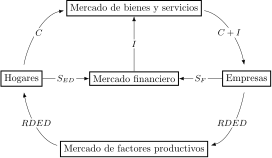
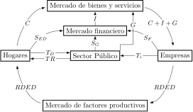
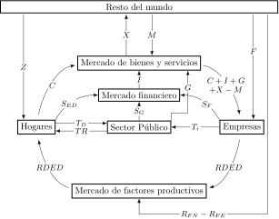
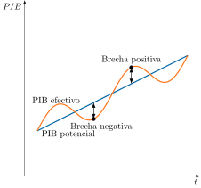

Apuntes para la oposición al Cuerpo de Diplomados Comerciales del Estado
1 Magnitudes macroeconómicas y contabilidad nacional.
1.1 Introducción  1'
1'
El PIB es una de las cifras de las que más se habla en la prensa y en las redes. Pero, ¿qué mide exactamente y cómo se obtiene?
La respuesta empieza en el siglo XVIII. Quesnay, médico de Luis XV, concibió en 1758 el Tableau économique (Stone 1984, 121) y comparó la circulación del dinero en la economía con la de la sangre en el cuerpo (Fonseca s.f.). De ahí nace el flujo circular de la renta: lo que unos gastan es lo que otros ingresan. Medir esa circulación es la tarea de las macromagnitudes, y registrarla cuenta a cuenta, la de la contabilidad nacional.1
¿Para qué sirve? Para analizar el ciclo y la estructura de la economía, comparar países con las mismas reglas y fundamentar los presupuestos (Lundberg 1984). Además es un instrumento neutral: la usan todas las escuelas, y monetaristas y keynesianos no discuten su utilidad (Lundberg 1984).
Por lo tanto, el objetivo de la presente exposición será el estudio de estos medidores de la actividad económica:
Las macromagnitudes, que miran la economía desde arriba, con pocos agentes y pocas variables, como la producción, la renta, el gasto, el ahorro y la inversión. Bastan para razonar sobre el flujo circular y las identidades.
La contabilidad nacional, que baja un escalón: reparte esa actividad entre sectores institucionales y la ordena en una sucesión de cuentas, cada una con su saldo. De ahí salen, de forma coherente, las macromagnitudes, y por eso en el SCN actual las primeras quedan subsumidas en la segunda.
1.2 Las magnitudes macroeconómicas: el flujo circular de la renta 11'30"
La idea básica para construir macromagnitudes es que la actividad económica se puede analizar desde tres puntos de vista diferentes pero equivalentes: producción, demanda que existe sobre ella y distribución de la renta entre factores. El SEC 2010 los recoge como los tres métodos de medición del PIB: el de la producción, que suma el valor añadido de todas las actividades, el del gasto, que suma los usos finales de bienes y servicios, y el de la renta, que suma las rentas generadas en el proceso productivo (Eurostat 2013, párr. 1.133).2
Economía cerrada y sin sector público
Estas tres perspectivas se sintetizan en el diagrama del flujo circular de la renta. Su versión más sencilla corresponde a una economía cerrada y sin sector público, en la que solo intervienen dos agentes, las economías domésticas y las empresas, y tres mercados. En el mercado de factores productivos, las economías domésticas alquilan a las empresas su trabajo y su capital y reciben a cambio rentas en forma de salarios, intereses y dividendos. En el mercado de bienes y servicios, las empresas venden lo que producen con esos factores y las economías domésticas lo compran con esas rentas. Finalmente, en el mercado financiero, el ahorro se canaliza hacia la inversión (Mankiw 2008, 102).3

Gráficamente, como en la Figura 1.1, se representan los dos agentes, los tres mercados y los flujos monetarios entre ellos. Así:
Las empresas pagan a los factores que utilizan y las economías domésticas reciben la mayor parte de esa renta a través del mercado de factores productivos. Es su renta disponible, \(RDED\), a la que se llega descontando lo que las empresas retienen.4
Las economías domésticas destinan la \(RDED\) al consumo, \(C\), que gastan en el mercado de bienes y servicios, y al ahorro, \(S_{ED}\), que depositan en el mercado financiero.
Las empresas retienen una parte de la renta como ahorro empresarial, \(S_{F}\), que también llega al mercado financiero.
El mercado financiero canaliza ese ahorro hacia la inversión, \(I\), que se materializa en compras en el mercado de bienes y servicios.
Los ingresos de las empresas, \(C+I\), son lo que después pagan a los factores, de modo que el circuito se cierra.
El producto nacional
A partir de este análisis se puede definir la primera magnitud básica: el Producto Nacional, \(PN\), expresado como valor monetario de la corriente de bienes y servicios finales producidos por factores productivos nacionales por un periodo determinado de tiempo. De esta definición se deducen tres de los rasgos más destacables del Producto Nacional como magnitud macroeconómica:
El Producto Nacional siempre tiene como referencia un periodo de tiempo, lo que denota que es una variable flujo. A diferencia de una variable stock, como la riqueza, que se mide en un momento determinado.
Solo se refiere al valor de los bienes y servicios finales. Las materias primas y los productos no terminados tendrían cabida únicamente si no hubieran sido aún aplicados al proceso productivo. En caso contrario se incurriría en doble contabilización. Una forma equivalente de evitarla es medir el producto como la suma del valor añadido de cada empresa, es decir, el valor de su producción menos el de los bienes intermedios que compra (Mankiw 2008, 70). En el SEC este es el consumo intermedio, los bienes y servicios que se consumen como insumos en un proceso de producción (Eurostat 2013, párr. 3.88).
Hace referencia al valor de bienes y servicios puesto que la corriente física sería de imposible agregación debido a la heterogeneidad de los mismos. La referencia a la hora de valorar esos bienes y servicios será generalmente su precio de mercado5.
El gasto nacional
El siguiente paso es analizar la aplicación que se da a este flujo de bienes y servicios. Desde un punto de vista general, el flujo productivo puede recibir dos aplicaciones: el consumo y la inversión. De esta forma, el Gasto Nacional, \(GN\), va a definirse como la suma de Consumo, \(C\), e Inversión, \(I\), durante el periodo considerado y, por consiguiente, igual al \(PN\) \[PN=GN=C+I \tag{1.1}\]
El estudio de la inversión es importante dado que vincula el Producto Nacional y la Riqueza Nacional –definida como el valor total, en términos monetarios del conjunto de bienes económicos poseídos por los integrantes de una economía en un momento determinado– como variables flujo y stock respectivamente. Por lo tanto, la inversión hace referencia a la parte de dicho flujo productivo que, por no ser consumida, pasa a formar parte de la Riqueza Nacional.
A su vez, cabe destacar dos aspectos relacionados con la inversión:
El concepto de inversión incluye el capital productivo “fijo”, que comprende el capital como factor de producción, es decir, activos usados en la producción durante más de un año: viviendas, otras construcciones, maquinaria y equipo –los bienes de equipo, como barcos, vehículos u ordenadores–, sistemas de armamento, recursos biológicos cultivados y productos de propiedad intelectual (Eurostat 2013 párrs. 3.124 y 3.127), y la variación de existencias de materias primas, productos intermedios y productos finales. Por lo tanto, los aumentos de existencias se consideran, en general, inversión. En el SEC, la inversión bruta es la formación bruta de capital, FBC, que suma la formación bruta de capital fijo, FBCF, la variación de existencias y las adquisiciones menos cesiones de objetos valiosos (Eurostat 2013, párr. 3.122).
La importancia de la depreciación, es decir, la pérdida del valor del capital productivo fijo durante el espacio de tiempo analizado. La depreciación puede clasificarse en depreciación por obsolescencia y depreciación por desgaste físico6.
La introducción del concepto de depreciación va a permitir distinguir entre inversión bruta –que correspondería con la definición original– y la inversión neta, que sería la bruta menos la depreciación. Por lo tanto, la inversión neta cuantifica la ampliación del stock de capital mientras que la bruta incluye además la inversión de reposición, es decir, la que compensa las mermas de capacidad productiva ocasionadas en el periodo de referencia.
Por ello, esta diferenciación es extensible al Producto Nacional, lo que permite distinguir entre Producto Nacional Bruto, \(PNB\), –que corresponde con la definición original– y el Producto Nacional Neto, \(PNN\). Económicamente, el \(PNN\) es el flujo productivo que queda tras deducir la parte que se destina a mantener el stock de capital fijo. \[PNB=GNB \tag{1.2}\] \[PNN=PNB-D=GNB-D=GNN \tag{1.3}\]
La renta nacional
Por su parte, la Renta Nacional, \(Y\), se define como la suma total de las rentas generadas en favor de los propietarios de los factores de producción durante el período, contraprestación por la aportación de estos recursos al proceso productivo.
Los conceptos de \(Y\), \(PN\) y \(GN\) son idénticos en una economía cerrada. El vínculo entre \(PN\) y \(Y\) está relacionado con el hecho de que el valor de cada bien producido se “reparte” entre los propietarios de los factores productivos que han intervenido en su producción. Por consiguiente, esto es igual al \(GN\) por lo que se demuestra que los tres conceptos son idénticos y hacen referencia al flujo circular de la renta7: \[PN=GN=Y \tag{1.4}\]
La renta disponible de las economías domésticas
También cabe definir la Renta Disponible de las Economías Domésticas, \(RDED\), que se identifica con el volumen de renta del que disponen las economías domésticas para efectuar sus actividades de gasto. En una economía sin sector público la única diferencia entre \(Y\) y \(RDED\) viene dada por los beneficios no distribuidos por las empresas o ahorro empresarial \(S_{F}\), que es la única parte de \(Y\) que no pasa por las economías domésticas antes de ser gastada. Además, las economías domésticas destinan su renta disponible al consumo, \(C_{ED}\), o al ahorro, \(S_{ED}\): \[Y-S_{F}=RDED=C_{ED}+S_{ED} \tag{1.5}\]
El ahorro nacional
El ahorro de los hogares, junto con el ahorro empresarial, va a formar el Ahorro Nacional, \(S_{Nac}\). Su importancia se debe a que es la variable que permite financiar la acumulación de capital, es decir, es la condición necesaria para que pueda existir inversión. En una economía cerrada sin sector público, la relación entre ahorro e inversión es crucial desde el punto de vista macroeconómico y van a ser iguales ya que de ( 1.5) se deduce que la Renta Nacional es igual al consumo más el ahorro nacional \[Y=C_{ED}+S_{ED}+S_{F}=C+S_{Nac} \tag{1.6}\] y aplicando la identidad básica de gasto ( 1.1) se obtiene \[S_{Nac}=I \tag{1.7}\] por lo que la interpretación económica no es solo que el ahorro es condición necesaria para que exista inversión, sino que el ahorro se transforma necesariamente en inversión. El ahorro y la inversión se miden en los mismos términos, brutos o netos, que el producto y la renta.8
Economía cerrada y con sector público
Al introducir el sector público, las administraciones públicas obtienen ingresos y realizan gastos que pasan a formar parte del flujo circular. El esquema anterior se modifica según las funciones que desempeñan:
Las AA.PP. desarrollan actividades productivas y por lo tanto compran bienes al sector privado y utilizan factores productivos para ofrecer una serie de bienes y servicios a la sociedad. Como no tienen precio de mercado, su producción se valora por su coste de producción: consumos intermedios, remuneración de asalariados, consumo de capital fijo y otros impuestos netos de subvenciones sobre la producción (Eurostat 2013, párr. 3.49).
Las AA.PP. son también un agente perceptor de rentas que se derivan principalmente de los impuestos que se dividen en impuestos directos e indirectos. A su vez, también se incluyen otros ingresos de carácter coercitivo que no tienen un carácter fiscal –por ejemplo, las contribuciones a la Seguridad Social–.
El sector público es también un agente de gasto final, lo que hace aparecer el componente de gasto público final en el apartado de Gasto Nacional.
El gasto público, \(G\) es la suma del consumo público, \(C_{G}\), y la inversión pública, \(I_{G}\). La inversión del sector privado se denota \(I\), y la inversión total, \(I_{Total}=I+I_{G}\). Así, el gasto nacional queda: \[PN=GN=C+I+G=C+I+C_{G}+I_{G} \tag{1.8}\]

Gráficamente, como en la Figura 1.2, a los agentes y mercados anteriores se añade el sector público, que se relaciona con ellos a través de impuestos, transferencias y gasto. Así:
Las economías domésticas pagan al sector público impuestos directos, \(T_{D}\), y reciben de él transferencias, \(TR\).
Las empresas pagan impuestos indirectos, netos de subvenciones, \(T_{i}\).
El sector público compra en el mercado de bienes y servicios, \(G\), que comprende su consumo, \(C_{G}\), y su inversión, \(I_{G}\).
Su ahorro, \(S_{G}\), se canaliza hacia el mercado financiero y, si es negativo, el sector público toma prestado de él (Mankiw 2008, 102-3).
Los ingresos de las empresas, \(C+I+G\), son lo que después pagan a los factores, de modo que el circuito sigue cerrándose.
El producto nacional a precios de mercado y a coste de factores
La consideración de los impuestos indirectos obliga a distinguir entre Producto Nacional a precios de mercado, \(PN_{pm}\), y el Producto Nacional a coste de factores, \(PN_{cf}\), que parte de la valoración de cada bien antes de impuestos indirectos. Por lo tanto, el Producto Nacional a coste de factores en términos brutos, \(PNB_{cf}\), será igual al \(PNB_{pm}\) menos la recaudación total de impuestos indirectos, neto de subvenciones otorgadas a las empresas \(T_{i}\) \[PNB_{cf}=PNB_{pm}-T_{i} \tag{1.9}\] y análogamente en términos netos detrayendo el consumo de capital fijo \[PNN_{cf}=PNN_{pm}-T_{i} \tag{1.10}\]
A partir de aquí, la renta nacional, \(Y\), que es lo que cobran los propietarios de los factores, coincide con el producto nacional neto a coste de factores, \(PNN_{cf}\), y no con el producto a precios de mercado, que incluye los impuestos indirectos.
En estas circunstancias, el paso de \(PN_{cf}\) a \(RDED\) exige tener en cuenta tres aspectos adicionales:
El ahorro empresarial es parte de \(Y\) pero no se traduce en \(RDED\).
Parte del factor capital es propiedad de las AA.PP. por lo que su retribución va a parar a estas y no a las economías domésticas.
Las economías domésticas y las AA.PP. se realizan entre sí pagos de transferencias sin contrapartida inmediata. Los realizados por el Estado comprenden prestaciones sociales e intereses de deuda pública y los percibidos son impuestos y cotizaciones sociales9.
Por todo ello, la \(RDED\) es igual al \(PNN_{cf}\) menos el ahorro empresarial, \(S_{F}\), la recaudación de impuestos directos, \(T_{D}\), la renta obtenida por los factores propiedad del Estado, \(R_{G}\), más las transferencias, \(TR\), que las AA.PP. entregan a las economías domésticas –prestaciones sociales e intereses de la deuda pública– netas de las cotizaciones sociales que les exigen \[RDED=PNN_{cf}-S_{F}-T_{D}-R_{G}+TR=C_{ED}+S_{ED} \tag{1.11}\]
La renta y el gasto de las AA.PP.
El concepto de renta disponible del sector público, \(RDG\), se define como sus ingresos totales, impuestos y rentas de la propiedad pública, menos las transferencias netas al sector privado, y es la renta de la que dispone para su gasto final. Dicho gasto se efectuará en consumo público, adquiriendo bienes y servicios y pagando a funcionarios, mientras que la parte no consumida será ahorro público, \(S_{G}\), que quedará disponible para la inversión. \[S_{G}=T_{D}+T_{i}+R_{G}-TR-C_{G}=RDG-C_{G} \tag{1.12}\]
Este ahorro público junto con el ahorro empresarial y el de las familias configurarán ahora el ahorro nacional. Teniendo en cuenta las expresiones ( 1.10) y ( 1.11) \[PNN_{pm}=PNN_{cf}+T_{i}=RDED+S_{F}+RDG \tag{1.13}\] se comprueba que el producto se transforma íntegramente en renta disponible para el gasto, bien de las AA.PP., bien de las economías domésticas o bien de las empresas privadas.
Así, desarrollando la expresión ( 1.13) y denotando la inversión privada se puede expresar \[RDED+S_{F}+RDG=C_{ED}+C_{G}+I+I_{G} \tag{1.14}\] pasando el consumo al lado izquierdo de la expresión se obtiene que la suma de ahorro de los hogares, de las empresas y AA.PP., es decir, el ahorro nacional, es igual a la suma de inversión pública y privada, es decir, la inversión total \[S_{ED}+S_{F}+S_{G}=I+I_{G}\Rightarrow S_{Nac}=I_{Total} \tag{1.15}\]
Por lo tanto, se sigue manteniendo la identidad entre ahorro e inversión pero ahora el sector público –o el sector privado– podría invertir por encima de su ahorro siempre que sea compensado por un ahorro por encima de la inversión del sector privado –o del sector público–, lo que configura los conceptos de capacidad o necesidad de financiación. Reordenando la identidad anterior, el exceso del ahorro privado sobre la inversión privada, \(\left(S_{ED}+S_{F}\right)-I\), es igual a \(I_{G}-S_{G}\), que es la necesidad de financiación del sector público: lo que ahorran de más los agentes privados lo toma prestado el Estado. Si \(S_{G}\) supera a \(I_{G}\), el sector público tiene capacidad de financiación y es el sector privado el que se endeuda.10
Economía abierta
Al esquema visto hasta el momento se le añade que el país mantiene relaciones económicas con el exterior. Concretamente, en tres ámbitos distintos:
Comercia con el resto del mundo.
Permite que las economías domésticas residentes “alquilen” sus factores productivos al resto del mundo y que los no residentes los alquilen en el país.
Recibe y entrega transferencias del exterior.

Gráficamente, como en la Figura 1.3, a los agentes y mercados anteriores se añade el resto del mundo. Así:
Las exportaciones, \(X\), y las importaciones, \(M\), circulan entre el mercado de bienes y servicios y el resto del mundo.
El saldo neto de rentas de los factores, \(R_{FN}-R_{FE}\), circula por el mercado de factores productivos.
Las transferencias corrientes netas, \(Z\), llegan a las economías domésticas y las de capital, \(F\), a las empresas.
Los ingresos de las empresas pasan a ser \(C+I+G+X-M\), es decir, el PIB a precios de mercado.
Producto Interior Bruto y Producto Nacional Bruto
En primer lugar, se hace necesario diferenciar entre el Producto Interior y el Producto Nacional. El Producto Interior Bruto, \(PIB\), es el valor de los bienes y servicios finales producidos durante el período por las unidades residentes en el territorio económico del país, sea quien sea el propietario de los factores, mientras que el Producto Nacional Bruto, \(PNB\), es atribuible a factores de producción propiedad de residentes.11
Por lo tanto, el \(PIB\) es el \(PNB\) más la retribución de los factores de propiedad de no residentes que operan en el país, \(R_{FE}\), y menos la de los factores de propiedad de residentes que operan en el exterior, \(R_{FN}\)12 \[PIB=PNB+R_{FE}-R_{FN} \tag{1.16}\]
Transferencias entre el país y el resto del mundo
Un segundo aspecto a tener en cuenta es el relacionado con los pagos de transferencias existentes a nivel internacional que como tales no tendrán su origen en la retribución de factores productivos13.
Por tanto, su efecto es redistribuir renta ya generada entre distintos países, y se distinguen las transferencias corrientes de las de capital, que están vinculadas a la adquisición de activos, como una ayuda para construir infraestructuras. Se denominará \(Z\) al saldo neto de transferencias corrientes y \(F\) al saldo neto de transferencias de capital recibidas por el país.
Compras y ventas de bienes y servicios entre el país y el resto del mundo
A su vez, el resto del mundo va a desempeñar el papel de oferente y demandante de bienes y servicios por lo que partiendo de una economía cerrada, el mantenimiento de flujos comerciales con el exterior va a suponer:
Que parte del consumo, la inversión y el gasto público domésticos se va a satisfacer con producción extranjera en forma de importaciones, \(M\).
Que parte de la producción doméstica satisfará el consumo, la inversión y el gasto público extranjeros en forma de exportaciones, \(X\).
Por lo tanto, se puede obtener la identidad donde el \(PIB_{pm}\) es igual a la suma del consumo, la inversión, el gasto público, las exportaciones menos las importaciones \[PIB_{pm}=\underbrace{C+I+G}_{A}+X-M \tag{1.17}\] permitiendo determinar la contribución al crecimiento del producto agregado del gasto doméstico, \(A=C+I+G\), y de la demanda externa, \(X-M\).14
Relación con saldos de la Balanza de Pagos
Sustituyendo la expresión ( 1.16) en la ( 1.17) se obtiene que el Producto Nacional Bruto a precios de mercado es igual a la suma de consumo, inversión, gasto público, la balanza comercial y la balanza de rentas \[PNB_{pm}=\underbrace{C+I+G}_{A}+\underbrace{X-M}_{{\text{Balanza}\atop \text{comercial}}}+\underbrace{R_{FN}-R_{FE}}_{{\text{Balanza}\atop \text{de rentas}}} \tag{1.18}\]
Además, sumando las transferencias corrientes y de capital netas recibidas por el país, procedentes del resto del mundo, a ambos lados de ( 1.18), se obtiene la ecuación fundamental para el análisis del comportamiento económico de un país. En ella, la capacidad total de gasto de un país, \(PNB_{pm}+Z+F\), se divide entre lo que gasta, el gasto doméstico, \(A\), y lo que no gasta y cede al exterior, que es el saldo de la cuenta corriente, \(CC\), más el de la cuenta de capital, \(CK\).15 \[PNB_{pm}+Z+F=A+CC+CK \tag{1.19}\] donde \[\begin{aligned} CC & =X-M+Z+R_{FN}-R_{FE}\\ CK & =F \end{aligned} \tag{1.20}\]
Por lo tanto, se observa que el saldo conjunto de la cuenta corriente y de capital, \(CC+CK\), denota la diferencia entre la capacidad de gasto del país y el gasto efectivamente realizado por este o, en otras palabras, su capacidad de financiación –recursos disponibles para el gasto pero no gastados sino cedidos a otros países– o su necesidad de financiación –gasto por encima de los recursos disponibles, cubierto con recursos cedidos por terceros países–. A este saldo conjunto se le denomina capacidad o necesidad de financiación, \(CNF\), según su signo.
Combinando las identidades de ingresos y pagos de los agentes –economías domésticas, empresas, sector público, mercado financiero y resto del mundo–, se obtiene la identidad básica de toda economía abierta: lo que el sector privado ahorra por encima de lo que invierte financia al sector público, que gasta más de lo que ingresa, y al resto del mundo.16
\[\underbrace{S-I}_{\text{Capacidad del sector privado}}=\underbrace{G+TR-T}_{\text{Necesidad del sector p{ú}blico}}+\underbrace{X-M}_{\text{Capacidad del pa{í}s frente al exterior}} \tag{1.21}\]
donde \(S\) es el ahorro privado, \(I\) la inversión privada, \(G\) el gasto público, \(TR\) las transferencias y \(T\) la recaudación total de impuestos. Para simplificar, se omiten las rentas de los factores y las transferencias con el exterior. Si se incluyeran, \(X-M\) pasaría a ser el saldo de la cuenta corriente, \(CC\), y, sumando en el lado izquierdo las transferencias de capital netas recibidas, \(F\), el saldo exterior sería \(CC+CK\), la capacidad o necesidad de financiación del país.17
De esta identidad se deriva la hipótesis de los déficits gemelos: si el ahorro privado iguala a la inversión privada, \(S=I\), el déficit público, \(G+TR-T\), se manifiesta en un déficit exterior de igual magnitud, es decir, \(X-M=-\left(G+TR-T\right)\) (Dornbusch et al. 2009, 33).18
Magnitudes nominales y reales
Las magnitudes anteriores se expresan en euros de cada año, de modo que su variación mezcla cambios en las cantidades y en los precios. Para separarlos, se distingue entre magnitudes nominales y reales.
El PIB nominal valora la producción a precios corrientes, mientras que el PIB real la valora con los precios de un año base, de modo que solo varía si varían las cantidades (Mankiw 2008, 72). Su cociente es el deflactor del PIB, que mide el precio de la producción en relación con el que tenía en el año base y permite deflactar, es decir, eliminar la inflación del PIB nominal para obtener el real (Mankiw 2008, 73):
\[\text{Deflactor del }PIB=\dfrac{PIB\text{ nominal}}{PIB\text{ real}}\cdot100 \tag{1.22}\]
El PIB nominal se descompone así en un componente de cantidades, el PIB real, y otro de precios, el deflactor.
La tasa de crecimiento del PIB real es su variación de un año respecto al anterior, en porcentaje del PIB real del año anterior, y es la medida habitual del crecimiento económico. La tasa de inflación medida con el deflactor es, igualmente, la variación porcentual del deflactor. Dividido entre la población, el PIB da el PIB per cápita, que mide la producción media por habitante, aunque no dice cómo se reparte.
Para que los precios no se queden anticuados, los institutos de estadística utilizan medidas encadenadas del PIB real, en las que el año base varía continuamente (Mankiw 2008, 74).19
El indicador de precios más utilizado es el índice de precios al consumo, IPC, que mide el precio de una cesta de bienes y servicios comprados por un consumidor representativo en relación con el que tenía en un año base (Mankiw 2008, 83). Se diferencia del deflactor del PIB en tres aspectos (Mankiw 2008, 84-85):
El deflactor mide los precios de todos los bienes y servicios producidos, mientras que el IPC solo mide los de los comprados por los consumidores.
El deflactor solo comprende los bienes producidos en el interior, mientras que el IPC incluye los importados que compran los consumidores.
El IPC utiliza una cesta fija, es decir, es un índice de Laspeyres, mientras que el deflactor permite que la cesta varíe, es decir, es un índice de Paasche.
Cuando los precios relativos varían, el índice de Laspeyres tiende a sobrestimar el aumento del coste de la vida y el de Paasche a subestimarlo (Mankiw 2008, 85).
En la Unión Europea, el índice de precios de consumo se calcula con un método y unas definiciones comunes y se llama índice de precios de consumo armonizado, IPCA, que se usa sobre todo para medir la inflación (Eurostat 2024).
Otros índices miden los precios en fases distintas del consumo, como el índice de precios industriales, IPRI, que mide la evolución de los precios de los productos industriales fabricados y vendidos en el mercado interior, en la primera etapa de su comercialización (Instituto Nacional de Estadística 2024 apdo. II).
La comparación del PIB real con el PIB potencial, la brecha de producción u output gap, se estudia en los temas de ciclos económicos y de crecimiento.20
1.3 La contabilidad nacional según el SEC 2010 7'
Hasta aquí se ha estudiado el comportamiento agregado. A continuación se verá la influencia de cada sector institucional en el conjunto económico a través de la Contabilidad Nacional.21
Marco, unidades y principios
La finalidad de la Contabilidad Nacional es similar a la de las macromagnitudes: una aproximación del comportamiento económico global de un país. Pero la Contabilidad Nacional lo hace desde una perspectiva de mayor desagregación, atendiendo a las operaciones realizadas por los “sectores institucionales” y mostrando por tanto, con metodología contable, la formación de las macromagnitudes como resultado de la agregación de las operaciones de estos sectores. Es importante entre otros aspectos para:
Determinar la especialización de un país.
Proporcionar una medida del bienestar material del país.
Permitir comparaciones internacionales.22
Para esto último se requiere una metodología internacional homogénea, tarea tradicionalmente encomendada a la ONU, que ha publicado el Sistema de Cuentas Nacionales, SCN, en 1953, 1968, 1993 y 2008 (United Nations Statistics Division s.f.) y lo ha actualizado en 2025 (United Nations Statistics Division 2025).23 En la Unión Europea se aplica el Sistema Europeo de Cuentas Nacionales y Regionales, SEC 2010, armonizado con el SCN 2008 (Eurostat 2013, párr. 1.05), aprobado por el Reglamento (UE) n.º 549/2013 y obligatorio desde septiembre de 2014 (Instituto Nacional de Estadística 2014). Se compone de dos conjuntos de tablas (Eurostat 2013, párr. 1.06):
Una sucesión de cuentas, en la que se centra este apartado.
Tablas input-output: muestran, por productos y ramas, la oferta y la utilización de bienes y servicios y la formación del valor añadido, y permiten calcular los coeficientes técnicos que relacionan los insumos de cada rama con su producción.24
La homogeneidad es obligatoria porque sobre estas cuentas se determinan la contribución de cada Estado al presupuesto de la Unión, las ayudas regionales y el procedimiento de déficit excesivo (Eurostat 2013, párr. 1.11). En él, el déficit público es el endeudamiento neto de las administraciones públicas según el SEC, es decir, su capacidad o necesidad de financiación (Eurostat 2013, párr. 20.112), y se compara con el valor de referencia del 3 % del PIB, igual que la deuda pública bruta con el del 60 % (Unión Europea 2016 arts. 1 y 2).
La contabilidad nacional recoge las operaciones de las unidades institucionales residentes, es decir, las que tienen su centro de interés económico predominante en el territorio durante un año o más (Eurostat 2013 párrs. 2.04 y 2.07). Se agrupan en cinco sectores institucionales según su tipo de productor y su actividad principal (Eurostat 2013, párr. 2.33):
Sociedades no financieras: productores de mercado cuya actividad principal es la producción de bienes y servicios no financieros.
Instituciones financieras: productores de mercado cuya actividad principal es la producción de servicios financieros.
Administraciones públicas: productores no de mercado financiados con pagos obligatorios, y las unidades que redistribuyen la renta y la riqueza nacionales.
Hogares: personas o grupos de personas como consumidores y como empresarios productores de mercado.
Instituciones sin fines de lucro al servicio de los hogares: productores privados no de mercado.
A ellos se suma el resto del mundo, S.2, que agrupa a las unidades no residentes en la medida en que se relacionan con las residentes (Eurostat 2013, párr. 2.131).25
Se considera productor de mercado a la unidad que cubre con sus ventas al menos el 50 % de sus costes durante un periodo plurianual sostenido (Eurostat 2013, párr. 3.19), y este umbral decide, por ejemplo, si una unidad pública se clasifica en las administraciones públicas.
Las operaciones se registran por partida cuádruple, porque casi todas involucran a dos unidades y cada una las anota dos veces (Eurostat 2013, párr. 1.92), y según el devengo, es decir, cuando se crea, transforma o extingue valor económico y no cuando se paga (Eurostat 2013, párr. 1.101). Además, la producción se valora a precios básicos, que excluyen los impuestos netos sobre los productos, y los usos a precios de adquisición, que los incluyen (Eurostat 2013, párr. 1.97).26
La sucesión de cuentas
Para realizar un análisis en profundidad de las operaciones económicas que se realizan entre los agentes que intervienen en la economía, el SEC 2010 describe el ciclo económico en una serie ordenada de cuentas corrientes, de acumulación y de balance. Separada, aparece la cuenta de bienes y servicios que se presenta únicamente para el conjunto de la economía. Está equilibrada por definición y por tanto carece de saldo contable (Eurostat 2013, párr. 8.82). Su objeto es mostrar cómo se utilizan los bienes y servicios disponibles.27
Cada cuenta se cierra con un saldo contable que pasa como primer recurso a la cuenta siguiente (Eurostat 2013, párr. 8.03). Por eso la sucesión reconstruye, paso a paso, las macromagnitudes del flujo circular. Las cuentas corrientes recorren la formación, la distribución y la utilización de la renta:
La cuenta de producción tiene como saldo el valor añadido, y al sumar el de todas las actividades y los impuestos netos sobre los productos se obtiene el PIB (Eurostat 2013 párrs. 8.11 y 8.13), el mismo que el método del gasto calcula como \(C+I+G+X-M\).
La cuenta de generación de la renta muestra cómo el valor añadido remunera a los asalariados y a las administraciones, y su saldo es el excedente de explotación, lo que queda del valor añadido tras pagar a los asalariados y los otros impuestos netos sobre la producción, o, en los hogares empresarios, la renta mixta (Eurostat 2013 párrs. 8.18 y 8.19).
La cuenta de asignación de la renta primaria cambia el punto de vista, de quien produce a quien recibe la renta (Eurostat 2013, párr. 8.21). Su saldo agregado es la renta nacional bruta, RNB, que en el flujo circular es el PNB, \(PIB+R_{FN}-R_{FE}\) (Eurostat 2013, párr. 8.94).
La cuenta de distribución secundaria incorpora los impuestos corrientes, las cotizaciones y prestaciones sociales y otras transferencias corrientes. Su saldo es la renta disponible y, para el conjunto de la economía, la renta nacional disponible bruta, RNDB, que es la RNB más las transferencias corrientes netas del exterior, \(Z\) (Eurostat 2013 párrs. 8.31 y 8.95).
La cuenta de redistribución de la renta en especie añade las transferencias sociales en especie, que son bienes y servicios individuales, principalmente de educación y sanidad, que los hogares reciben gratuitamente de las administraciones públicas y de las instituciones sin fines de lucro (Eurostat 2013, párr. 4.108). Su saldo es la renta disponible ajustada, que para el total de la economía coincide con la RNDB (Eurostat 2013 párrs. 8.35 y 8.41). En esta óptica, el consumo final efectivo de los hogares incluye lo que reciben gratuitamente por transferencias sociales en especie, y el de las administraciones es solo colectivo (Eurostat 2013, párr. 8.40). En el total de la economía, el consumo final efectivo y el gasto en consumo final coinciden (Eurostat 2013, párr. 3.121).
La cuenta de utilización de la renta distingue el consumo final y el ahorro. Su saldo es el ahorro y, para el total, el ahorro nacional bruto, la parte de la RNDB que no se destina al consumo final (Eurostat 2013 párrs. 8.42 y 8.96).
De esa sucesión sale el PIB a precios de mercado por tres vías que dan el mismo resultado (Eurostat 2013, párr. 8.89):
Producción: la suma del valor añadido bruto a precios básicos de las ramas, \(VAB_{pb}\), más los impuestos netos sobre los productos, \(T_{P}\): \(PIB_{pm}=VAB_{pb}+T_{P}\).
Gasto: la suma de los usos finales, consumo y formación bruta de capital, más las exportaciones y menos las importaciones: \(PIB_{pm}=C+I+G+X-M\).
Renta: la suma de la remuneración de los asalariados, \(RA\), el excedente bruto de explotación y la renta mixta, \(EBE\), y los impuestos netos sobre la producción y las importaciones, \(T_{i}\): \(PIB_{pm}=RA+EBE+T_{i}\).
Las cuentas de acumulación registran el destino del ahorro. La cuenta de capital recoge las adquisiciones menos las disposiciones de activos no financieros y mide la variación del patrimonio neto debida al ahorro y a las transferencias de capital (Eurostat 2013, párr. 8.46). Su saldo es la capacidad o necesidad de financiación, \(CNF\), según sea positivo o negativo (Eurostat 2013, párr. 8.47). La cuenta financiera recoge, por instrumento, la variación de activos y pasivos financieros que la componen y no tiene saldo propio, porque coincide con el de la cuenta de capital (Eurostat 2013, párr. 8.50).
Las cuentas de otras variaciones de los activos y los balances cierran el sistema, y el saldo agregado del balance es el patrimonio neto de la economía, la riqueza nacional (Eurostat 2013 párrs. 7.05 y 8.99). Las cuentas del resto del mundo siguen la misma pauta y se elaboran desde su óptica, de modo que lo que es recurso para él es empleo para la economía (Eurostat 2013 párrs. 8.66 y 8.67). Por eso la capacidad de financiación de la economía es igual, con signo opuesto, a la necesidad de financiación del resto del mundo (Eurostat 2013, párr. 8.98). La balanza de pagos presenta esas mismas relaciones con el exterior en otro formato, el del manual de balanza de pagos del Fondo Monetario Internacional, armonizado con el SCN 2008, y el SEC explica cómo se relacionan sus cuentas con las del resto del mundo (Eurostat 2013, párr. 18.05).
Con ello se cierra el círculo con las macromagnitudes. El ahorro nacional bruto, menos la formación bruta de capital y más las transferencias de capital netas recibidas, \(F\), es la capacidad o necesidad de financiación, \(CNF\), que es la suma \(CC+CK\) del flujo circular, con la salvedad de las adquisiciones netas de activos no producidos, como los terrenos o las licencias (Eurostat 2013, párr. 3.127).28
| Cuenta | Saldo | En el flujo circular |
|---|---|---|
| Producción | Valor añadido, y PIB al sumarlo | \(C+I+G+X-M\) |
| Explotación | Excedente de explotación y renta mixta | Rentas de los factores |
| Asignación de la renta primaria | Renta nacional bruta, RNB | \(PNB=PIB+R_{FN}-R_{FE}\) |
| Distribución secundaria | Renta nacional disponible bruta, RNDB | \(PNB+Z\) |
| Redistribución en especie | Renta disponible ajustada | Igual a la RNDB |
| Utilización de la renta | Ahorro nacional bruto | RNDB menos consumo final |
| Capital | Capacidad o necesidad de financiación | \(CNF=CC+CK\) |
| Financiera | Sin saldo propio | Coincide con la capacidad o necesidad de financiación |
| Balance | Patrimonio neto | Riqueza nacional |
| Resto del mundo | Capacidad o necesidad de financiación del resto del mundo | \(-CNF\) |
Alcance y limitaciones del PIB
Las macromagnitudes miden la actividad económica, pero no recogen todo lo que importa para el bienestar. Tres limitaciones destacan:
La producción que no se vende en el mercado se valora por imputación o se deja fuera. El PIB incluye el alquiler imputado de la vivienda en propiedad y valora los servicios públicos por su coste, pero no los servicios de los bienes duraderos de los hogares ni las comidas cocinadas en casa (Mankiw 2008, 70-71). La producción doméstica equivale a cerca del 35 % del PIB convencional en Francia, el 40 % en Finlandia y el 30 % en Estados Unidos (Stiglitz et al. 2009, párr. 51).
La economía sumergida se oculta a las autoridades. El SEC 2010 la incluye en principio en la frontera de la producción (Eurostat 2013, párr. 11.26), pero su medición es incierta. Con datos de IVA, Pappadà y Rogoff estiman una economía informal del 24 % del PIB de España como media de 1999 a 2020, frente al 36 % de Grecia y el 31 % de Italia (2023 Tabla 1).
La globalización puede distorsionar el PIB. En 2015 el PIB de Irlanda creció un 26,3 %, por las actividades de globalización de muy pocas empresas (Central Statistics Office 2017), mientras que la renta nacional bruta, RNB, lo hizo un 18,7 %. Para corregirlo, Irlanda elabora la RNB*, que excluye los efectos de la globalización (Central Statistics Office 2018).
Además, el bienestar es multidimensional. La Comisión Stiglitz-Sen-Fitoussi pidió medir también el ocio y la producción doméstica, y completar el PIB con otros indicadores (2009 párrs. 26-28). Aun así, mientras la magnitud de las imperfecciones se mantenga estable, el PIB sirve para comparar la actividad de un año con la de otro (Mankiw 2008, 71).29
1.4 Conclusiones  30"
30"
Como conclusión, las macromagnitudes y la contabilidad nacional son dos instrumentos fundamentales para el estudio de la Macroeconomía. Permiten conocer la actividad productiva de un país, su bienestar material y su sostenibilidad, compararlo con otros y orientar la política económica.
Pero ninguna medida es perfecta, y esta tiene límites que hoy siguen abiertos:
Globalización. En 2015 el PIB de Irlanda creció un 26,3 %, y la renta nacional bruta, un 18,7 % (Central Statistics Office 2017). ¿De quién es la producción de una multinacional?
Más allá del mercado. El SCN 2025 incorpora la digitalización y la economía informal, y amplía el marco para recoger mejor el bienestar y la sostenibilidad (United Nations Statistics Division 2025). ¿Es lo mismo crecer que vivir mejor?
Una cifra que se revisa. El INE fijó el PIB de 2025 en 1.690.012 millones de euros, unos 2.860 millones más que la estimación inicial (Instituto Nacional de Estadística 2026a). ¿Cuánta confianza merece la primera cifra que cita la prensa?
Apéndice
1.A.1. Historia de la contabilidad nacional
Las primeras estimaciones de la renta nacional son del siglo XVII. En 1664 William Petty escribió Verbum Sapienti, en gran medida con el fin de hacer más equitativo el sistema fiscal, y dio en él las primeras estimaciones conocidas de lo que podrían llamarse balances de la economía nacional, igualando la renta con el gasto (Stone 1984, 117). Gregory King elaboró para 1688 una tabla de ingresos, gastos y ahorro de las familias inglesas, repartidas en veintiséis clases sociales, y comparó Inglaterra con Francia y Holanda, el primer ejemplo de uso de las cuentas nacionales para comparar países (Stone 1984, 117 a 120). En Francia, Boisguillebert y Vauban publicaron estimaciones de la renta nacional para defender la reforma de un sistema fiscal que perjudicaba al país. Luis XIV lo desaprobó y sus libros fueron suprimidos (Stone 1984, 120). En 1758, el médico de Luis XV, François Quesnay, concibió el Tableau économique, que se considera el principio del análisis de los flujos intersectoriales (Stone 1984, 121).
En el siglo XIX los datos fueron más abundantes y, a finales de siglo, había estimaciones de la renta de unos veinte países, muchas de Mulhall, publicadas en su Dictionary of Statistics desde 1884 (Stone 1984, 120). Marx analizó la reproducción simple y ampliada en el segundo tomo de El capital, aparecido en 1885, y la Administración Estadística Central de la Unión Soviética elaboró una tabla input-output de 1923-1924, publicada en 1926, como base para planificar la producción (Stone 1984, 121). Tras la Primera Guerra Mundial el ritmo estadístico se aceleró y la estimación de la renta nacional floreció, con Bowley en Inglaterra y Kuznets en Estados Unidos. En los años treinta, Colin Clark recuperó la visión de conjunto de los aritméticos políticos: en National Income and Outlay (1937) reunió estimaciones de renta, producción, gasto de los consumidores, ingresos y gastos públicos, formación de capital, ahorro, comercio exterior y balanza de pagos. No las presentó en un marco contable, pero sus cifras se acercaban bastante a la coherencia (Stone 1984, 121).
La Segunda Guerra Mundial impulsó la contabilidad. Rothbarth actualizó las estimaciones de Clark para Keynes, que las usó como marco estadístico de How to Pay for the War, y en 1941 se publicó, por iniciativa de Keynes, el libro blanco An Analysis of the Sources of War Finance and an Estimate of the National Income and Expenditure in 1938 and 1940, que James Meade y Richard Stone habían elaborado como funcionarios (Stone 1984, 121). Keynes partía de un equilibrio entre los recursos corrientes totales, es decir, el producto nacional bruto real, y el consumo, la inversión y el gasto bélico, y celebró los experimentos de Stone con la frase “We are in a new era of joy through statistics” (Lundberg 1984). Stone diseñó las cuentas para que cada ingreso y cada gasto de una cuenta apareciera como gasto e ingreso en otra, con el principio de la partida doble, lo que permitía contrastar las estadísticas de distintas fuentes (Lundberg 1984). En 1984 recibió el Premio Nobel de Economía por haber hecho contribuciones fundamentales al desarrollo de los sistemas de cuentas nacionales (Royal Swedish Academy of Sciences 1984).
El origen del SCN está en el informe de 1947 del Subcomité de Estadísticas de la Renta Nacional del Comité de Expertos Estadísticos de la Sociedad de Naciones, bajo la dirección de Stone. En su primer período de sesiones, también en 1947, la Comisión de Estadística de las Naciones Unidas destacó la necesidad de normas estadísticas internacionales. Desde entonces el SCN ha tenido varias versiones (United Nations Statistics Division s.f.):
El SCN de 1953, publicado bajo los auspicios de la Comisión de Estadística, con seis cuentas estándar y doce cuadros estándar. Se revisó en 1960, con la experiencia de los países, y en 1964, para ajustarlo al manual de balanza de pagos del FMI.
El SCN de 1968 amplió el alcance con las cuentas input-output y los balances, dio más atención a las estimaciones a precios constantes y acercó el SCN al Sistema del Producto Material.
El SCN de 1993 armonizó el SCN con otras normas estadísticas internacionales de forma más completa.
El SCN de 2008, actualización del de 1993 por los cambios del entorno económico, los avances metodológicos y las necesidades de los usuarios.
El SCN 2025, adoptado ese año (United Nations Statistics Division 2025) (véase 1.A.10).
En la Unión Europea, el predecesor del SEC 2010, el SEC 95, se publicó en 1996 con el Reglamento (CE) n.º 2223/96 del Consejo, de 25 de junio de 1996. El SEC 2010 conserva la estructura de sus 13 primeros capítulos y añade 11 nuevos (Eurostat 2013, párr. 1.02), y es coherente con el SCN 2008, salvo diferencias de presentación y una mayor precisión de algunos conceptos (Eurostat 2013, párr. 1.05).
En España, las estimaciones de la renta nacional empezaron por iniciativa privada, con trabajos como los de Bernis (1919) y Vandellós (1925), y fueron oficiales a través de la Comisión de la Renta, creada en 1944. El equipo de Manuel de Torres elaboró para 1954 la primera Contabilidad Nacional con un sistema completo de cuentas, el sistema normalizado de la OCDE, y con métodos directos. Desde 1965 la elaboración corresponde al INE, y el SEC se usa desde la Contabilidad Nacional de España de base 1970 (Sierra Molina et al. 2004, 242 a 246).
| Año | Hito |
|---|---|
| 1664 | Petty, Verbum Sapienti |
| 1688 | Tabla de las familias inglesas de King |
| 1758 | Tableau économique de Quesnay |
| 1885 | Marx, segundo tomo de El capital |
| 1923-1924 | Tabla input-output de la Unión Soviética |
| 1937 | Clark, National Income and Outlay |
| 1941 | Libro blanco de Meade y Stone |
| 1947 | Informe del subcomité de la Sociedad de Naciones |
| 1953 | SCN 1953 |
| 1968 | SCN 1968 |
| 1984 | Premio Nobel a Stone |
| 1993 | SCN 1993 |
| 1996 | SEC 95 |
| 2008 | SCN 2008 |
| 2013-2014 | SEC 2010: Reglamento (UE) n.º 549/2013, obligatorio desde septiembre de 2014 |
| 2025 | SCN 2025 |
1.A.2. Cuadro de identidades por agentes
En una economía abierta y con sector público se pueden distinguir cinco agentes, que no deben confundirse con los sectores institucionales del SEC 2010:
| Ingresos | Pagos | ||
| Hogares | \(Y+TR\) | \(\equiv\) | \(C+S+T_{D}\) |
| Empresas | \(C+I+G+X\) | \(\equiv\) | \(Y+M+T_{i}\) |
| Sector Público | \(T_{D}+T_{i}+DP\) | \(\equiv\) | \(G+TR\) |
| Sector Financiero | \(S\) | \(\equiv\) | \(I+DP+XN\) |
| Sector Exterior | \(XN+M\) | \(\equiv\) | \(X\) |
Estas son las identidades básicas que derivan de los flujos de ingresos y pagos que se realizan en una economía abierta y con sector público.
\(T_{D}\) son los impuestos directos y \(T_{i}\) los indirectos netos de subvenciones, como en 1.2, y \(T=T_{D}+T_{i}\) la recaudación total. \(S\) es el ahorro privado, \(S=S_{ED}+S_{F}\), porque los beneficios no distribuidos se imputan a las economías domésticas, propietarias de las empresas. \(DP\) es el déficit público, \(G+TR-T\), y \(XN\) es el préstamo neto del sector financiero al sector exterior. Para simplificar, no se incluyen la depreciación, la renta de la propiedad pública, \(R_{G}\) ni las rentas de los factores y las transferencias con el exterior, \(R_{FN}-R_{FE}\), \(Z\) y \(F\). Si se incluyeran las del exterior, \(XN\) sería el saldo de la cuenta corriente, \(CC\), y, con las transferencias de capital, la capacidad o necesidad de financiación del país, \(CNF=CC+CK\), como en 1.2.
Cada identidad es la restricción de un agente. Sumarlas no aporta nada, porque cada flujo aparece una vez entre los ingresos y otra entre los pagos, y hay que combinarlas. De la de los hogares se despeja el ahorro y de la de las empresas la renta: \[S=Y+TR-C-T_{D} \tag{1.23}\] \[Y=C+I+G+X-M-T_{i} \tag{1.24}\]
Sustituyendo la segunda en la primera y usando la del sector exterior, \(XN=X-M\), se obtiene: \[S-I=\left(G+TR-T\right)+\left(X-M\right)=DP+XN \tag{1.25}\]
Es la identidad de 1.2: lo que el sector privado ahorra por encima de lo que invierte lo cede al sector público, que gasta más de lo que ingresa, y al exterior.
1.A.3. Precios de mercado, precios básicos y coste de los factores
El SEC 2010 toma como referencia de valoración los precios de mercado, es decir, el valor al que los flujos y los stocks se intercambian, o podrían intercambiarse, por dinero (Eurostat 2013, párr. 1.94). Como los gastos de transporte, los márgenes comerciales y los impuestos menos las subvenciones sobre los productos hacen que el productor y el usuario perciban de forma distinta el valor de un producto, el SEC registra todos los usos a precios de adquisición, que incluyen esos elementos, y la producción a precios básicos, que los excluyen (Eurostat 2013, párr. 1.97). Se distinguen tres valoraciones:
El precio básico es el que recibe el productor del comprador por una unidad de bien o servicio producida, menos los impuestos sobre los productos y más las subvenciones sobre los productos que correspondan a esa unidad. Excluye los gastos de transporte que el productor factura aparte (Eurostat 2013, párr. 3.44).
El precio de adquisición es lo que paga el comprador por los productos. Incluye los impuestos menos las subvenciones sobre los productos, excluido el IVA deducible, y los gastos de transporte que el comprador paga aparte para recibirlos en el lugar y el momento requeridos, y descuenta las rebajas por volumen o por compras fuera de temporada. Excluye los intereses y cargos por pagar a crédito y los recargos por retraso (Eurostat 2013, párr. 3.06).
El coste de los factores no es un concepto del SEC. El valor añadido bruto a coste de los factores se obtiene del valor añadido a precios básicos restando los otros impuestos menos subvenciones sobre la producción (Eurostat 2013, párr. 9.32).
El valor añadido bruto se registra a precios básicos, como la producción a precios básicos menos el consumo intermedio a precios de adquisición (Eurostat 2013, párr. 9.31). El PIB a precios de mercado, por la óptica de la producción, es la suma del valor añadido bruto de las ramas más los impuestos menos las subvenciones sobre los productos (Eurostat 2013, párr. 8.89). Llamando \(VAB_{pb}\) y \(VAB_{cf}\) al valor añadido bruto a precios básicos y a coste de los factores, \(T_{P}\) a los impuestos netos sobre los productos y \(T_{O}\) a los otros impuestos netos sobre la producción, resulta: \[PIB_{pm}=VAB_{pb}+T_{P} \tag{1.26}\] \[VAB_{pb}=VAB_{cf}+T_{O} \tag{1.27}\]
Los impuestos sobre la producción y las importaciones comprenden los impuestos sobre los productos, como el IVA y los impuestos sobre las importaciones, y los otros impuestos sobre la producción (Eurostat 2013, párr. 9.40). Llamando \(T_{i}\) a su suma neta de subvenciones, \(T_{i}=T_{P}+T_{O}\), se obtiene: \[PIB_{cf}=PIB_{pm}-T_{i}=VAB_{cf} \tag{1.28}\]
Por la óptica de la renta, el PIB a precios de mercado es la suma de la remuneración de los asalariados, los impuestos sobre la producción y las importaciones menos las subvenciones, y el excedente de explotación bruto y la renta mixta (Eurostat 2013, párr. 8.89), de modo que el PIB a coste de los factores es la suma de la remuneración de los asalariados y del excedente bruto y la renta mixta. Es una fórmula análoga a la que se usa en 1.2 para pasar del producto nacional a precios de mercado al producto nacional a coste de los factores.
La tabla ilustra estas relaciones con el PIB de España de 2025, según la estimación avance del INE (Instituto Nacional de Estadística 2026a).
| Millones de euros | |
|---|---|
| Valor añadido bruto a precios básicos | 1.531.681 |
| + Impuestos netos sobre los productos | 158.331 |
| = PIB a precios de mercado | 1.690.012 |
| – Impuestos netos sobre la producción y las importaciones | 169.037 |
| = PIB a coste de los factores | 1.520.975 |
| Remuneración de los asalariados | 817.261 |
| Excedente de explotación bruto y renta mixta bruta | 703.714 |
El valor añadido bruto es la suma de los cuatro grandes sectores del INE. Los otros impuestos netos sobre la producción, 10.706, salen por diferencia entre los impuestos netos sobre la producción y las importaciones, 169.037, y los impuestos netos sobre los productos, 158.331. El PIB a coste de los factores, 1.520.975, coincide con la suma de la remuneración de los asalariados y del excedente bruto y la renta mixta.
1.A.4. La sucesión de cuentas en detalle
Cuentas corrientes
Muestran cómo se genera, distribuye y redistribuye la renta, así como su utilización en forma de consumo final y el ahorro como factor principal de acumulación.
I. Cuenta de producción
Muestra las operaciones del proceso de producción y se elabora para los sectores institucionales y para las ramas de actividad. Sus recursos son la producción y sus empleos el consumo intermedio (Eurostat 2013, párr. 8.10). El saldo es el valor añadido, B.1g, bruto o neto del consumo de capital fijo. Como la producción se valora a precios básicos y el consumo intermedio a precios de adquisición, el valor añadido no incluye los impuestos menos las subvenciones sobre los productos. Para el total de la economía se suman a los recursos, y el saldo es el PIB a precios de mercado, B.1*g (Eurostat 2013 párrs. 8.12 y 8.13).
II. Distribución y utilización de la renta
Se analiza en cuatro etapas: distribución primaria, distribución secundaria, redistribución en especie y utilización (Eurostat 2013, párr. 8.15). Cada cuenta lleva su saldo a la siguiente como primer recurso (Eurostat 2013, párr. 8.03).
II.1 Distribución primaria
Trata de la generación de la renta que resulta directamente de la producción y de su reparto entre los factores, trabajo y capital, y las administraciones públicas, mediante los impuestos y las subvenciones sobre la producción y las importaciones (Eurostat 2013, párr. 8.15). Comprende la cuenta de generación y la de asignación de la renta primaria.
II.1.1 Generación de la renta
Presenta las rentas primarias desde el punto de vista de los sectores que las pagan (Eurostat 2013, párr. 8.17). Muestra cómo el valor añadido cubre la remuneración de los asalariados y los otros impuestos menos subvenciones sobre la producción (Eurostat 2013, párr. 8.18). El saldo es el excedente de explotación, B.2g, antes de los intereses, rentas y cargos que la unidad paga o recibe. En las empresas no constituidas en sociedad de los hogares, el saldo incluye la remuneración del trabajo del propietario y de su familia, y se llama renta mixta, B.3g (Eurostat 2013, párr. 8.19).
II.1.2 Asignación de la renta primaria
Trata a las unidades residentes como perceptoras de renta primaria y no como productoras (Eurostat 2013, párr. 8.21). La renta primaria es la que reciben por participar directamente en la producción y la que cobra el propietario de un activo financiero o de un recurso natural por ceder fondos o el recurso a otra unidad (Eurostat 2013, párr. 8.22). Solo se elabora para sectores y subsectores (Eurostat 2013, párr. 8.24). Se divide en dos cuentas (Eurostat 2013, párr. 8.25). La de renta empresarial determina un saldo, B.4g, equivalente al beneficio corriente antes de repartirlo y del impuesto sobre la renta, como en la contabilidad empresarial (Eurostat 2013, párr. 8.26). La de asignación de otras rentas primarias vuelve de la renta empresarial a la renta primaria, con los dividendos distribuidos y los beneficios reinvertidos de la inversión extranjera directa, entre otros elementos (Eurostat 2013, párr. 8.29). Su saldo es el saldo de rentas primarias, B.5g, que para el total de la economía es la renta nacional bruta, B.5*g (Eurostat 2013, párr. 8.08).
II.2 Distribución secundaria de la renta
Muestra cómo se reparte, por redistribución, el saldo de rentas primarias: impuestos corrientes sobre la renta y el patrimonio, cotizaciones y prestaciones sociales, sin las transferencias sociales en especie, y otras transferencias corrientes (Eurostat 2013, párr. 8.30). Su saldo es la renta disponible, B.6g, que refleja las operaciones corrientes y es lo que queda para el consumo final o el ahorro (Eurostat 2013, párr. 8.31).
II.3 Redistribución de la renta en especie
Amplía la renta de los hogares con los bienes y servicios individuales que reciben gratis de las administraciones públicas y de las instituciones sin fines de lucro, las transferencias sociales en especie (Eurostat 2013, párr. 8.33). Figuran en los recursos de los hogares y en los empleos de esos dos sectores (Eurostat 2013, párr. 8.34). El saldo es la renta disponible ajustada, B.7g (Eurostat 2013, párr. 8.35). Coincide con la disponible en el total de la economía y difiere entre sectores (Eurostat 2013, párr. 8.15).
II.4 Utilización de la renta
Muestra cómo se divide la renta disponible, o la ajustada, entre consumo final y ahorro en los sectores que tienen consumo final: hogares, administraciones públicas e instituciones sin fines de lucro (Eurostat 2013 párrs. 8.36 y 8.37). El saldo es el ahorro, B.8g, igual en las dos versiones (Eurostat 2013, párr. 8.42). Enlaza con la acumulación: si es positivo, la renta no gastada sirve para adquirir activos o pagar pasivos, y si es negativo, se liquidan activos o aumentan los pasivos (Eurostat 2013, párr. 8.43).
II.4.1 Renta disponible
Incluye el concepto de gasto en consumo final que financian los distintos sectores (Eurostat 2013, párr. 8.38). Su saldo es el ahorro (Eurostat 2013, párr. 8.39).
II.4.2 Renta disponible ajustada
Se enlaza con la redistribución en especie y usa el consumo final efectivo, es decir, el valor de los bienes y servicios que los hogares tienen realmente a su disposición, aunque los financien las administraciones o las instituciones sin fines de lucro. Por eso el consumo final efectivo de estas es solo colectivo (Eurostat 2013, párr. 8.40). En el total de la economía, el gasto en consumo final y el consumo final efectivo coinciden (Eurostat 2013, párr. 8.41).
Cuentas de acumulación
Analizan los diversos componentes de las variaciones de los activos y pasivos. Registran las variaciones del patrimonio neto. Permiten analizar la acumulación de capital y su financiación. Su saldo es la capacidad o necesidad de financiación.
I. Cuenta de capital
Registra las adquisiciones menos las cesiones de activos no financieros y mide la variación del patrimonio neto debida al ahorro y a las transferencias de capital (Eurostat 2013, párr. 8.46). Permite ver hasta qué punto esas adquisiciones se financian con ahorro y transferencias, y muestra una capacidad de financiación, el importe que una unidad tiene para financiar a otras, o una necesidad de financiación, el que está obligada a pedir prestado (Eurostat 2013, párr. 8.47). Tiene dos cuentas. La de variación del patrimonio neto por ahorro y transferencias de capital, III.1.1, tiene por saldo B.101, el ahorro neto más las transferencias de capital recibidas menos las pagadas (Eurostat 2013, párr. 8.48). La de adquisiciones de activos no financieros, III.1.2, devuelve ese concepto a la capacidad o necesidad de financiación, B.9 (Eurostat 2013, párr. 8.49).
II. Cuenta financiera
Registra, por instrumento financiero, las variaciones de los activos y pasivos financieros que componen la capacidad o necesidad de financiación. Como deben coincidir con el saldo de la cuenta de capital, que llega aquí como primera partida, no tiene saldo (Eurostat 2013, párr. 8.50). Usa la misma clasificación que los balances (Eurostat 2013, párr. 8.51).
III. Cuenta de otras variaciones de los activos
Registra los cambios de activos y pasivos distintos de los debidos al ahorro y a las transferencias voluntarias de riqueza (Eurostat 2013, párr. 8.52). La de otras variaciones de volumen, III.3.1, tiene por saldo la variación del patrimonio neto por otras variaciones de volumen, B.102 (Eurostat 2013, párr. 8.53). La de revalorización, III.3.2, registra los cambios de valor por variaciones de precios, las ganancias o pérdidas por tenencia nominales, y su saldo es la variación del patrimonio neto por ellas, B.103 (Eurostat 2013 párrs. 8.54 y 8.55). Las ganancias por tenencia se dividen en neutrales, que mantienen el poder adquisitivo general de los activos y pasivos, y reales, que son la diferencia entre las nominales y las neutrales y reflejan que el precio de un activo ha subido más, o menos, que el nivel general (Eurostat 2013 párrs. 8.57 a 8.59).
Cuentas de balance
Su fin es mostrar el total de activos y pasivos y el patrimonio neto al principio y al final del periodo contable, así como sus variaciones durante el mismo.
I. Balance de apertura
Recoge el valor de los activos y pasivos al comienzo del periodo, según la clasificación de activos y pasivos y a precios corrientes de esa fecha. El saldo es el patrimonio neto, B.90, es decir, la diferencia entre activos y pasivos (Eurostat 2013, párr. 8.61).
II. Balance de variación
Recoge las variaciones de valor de activos y pasivos en el periodo y suma lo registrado en las cuentas de acumulación: la variación del patrimonio neto por ahorro y transferencias de capital, por otras variaciones de volumen y por ganancias y pérdidas por tenencia nominales (Eurostat 2013, párr. 8.62). Su saldo es la variación del patrimonio neto, B.10 (Eurostat 2013 Tabla 8.1).
III. Balance de cierre
Recoge los activos y pasivos al final del periodo, con la misma clasificación y a precios corrientes de esa fecha, y su saldo es el patrimonio neto final (Eurostat 2013, párr. 8.63). El valor de cada partida es el del balance de apertura más su variación (Eurostat 2013, párr. 8.64).
Cuentas con el resto del mundo
Recogen las operaciones entre residentes y no residentes. Siguen el mismo desglose de cuentas, pero desde el punto de vista contrario:
Intercambio de bienes y servicios con el resto del mundo.
Cuenta exterior de rentas primarias y transferencias corrientes con el resto del mundo.
Cuenta de capital con el resto del mundo: variaciones del patrimonio neto debidas al ahorro y a las transferencias de capital, y adquisición de activos no financieros con el resto del mundo.
Las cuentas se elaboran desde el punto de vista del resto del mundo, que no es un sector institucional pero desempeña un papel parecido (Eurostat 2013, párr. 8.65). Lo que es recurso para él es empleo para la economía total, y al revés (Eurostat 2013, párr. 8.67).
En la cuenta exterior de bienes y servicios, V.I, las importaciones figuran en los recursos y las exportaciones en los empleos. El saldo es el saldo exterior de bienes y servicios, B.11, que si es positivo es un superávit para el resto del mundo y un déficit para el total de la economía (Eurostat 2013, párr. 8.68).
La cuenta exterior de rentas primarias y transferencias corrientes, V.II, determina el saldo exterior corriente, B.12, que en la estructura del sistema corresponde al ahorro de los sectores. Es una versión condensada de la secuencia entre la asignación de la renta primaria y la utilización de la renta (Eurostat 2013, párr. 8.70). En los recursos muestra el saldo exterior de bienes y servicios y registra todas las operaciones de distribución con el resto del mundo, salvo las transferencias de capital (Eurostat 2013, párr. 8.71).
En las cuentas de acumulación, V.III, la de capital registra las adquisiciones menos las cesiones de activos no producidos por no residentes y mide la variación del patrimonio neto por el saldo exterior corriente y las transferencias de capital (Eurostat 2013, párr. 8.72). Su saldo es la capacidad o necesidad de financiación del resto del mundo, igual y de signo contrario a la suma de la de los sectores residentes (Eurostat 2013, párr. 8.73). La cuenta financiera tiene el mismo diseño que la de los sectores (Eurostat 2013, párr. 8.74). Por convenio no hay activos producidos en sus cuentas de acumulación ni en sus balances, V.IV, que solo tienen activos y pasivos financieros (Eurostat 2013 párrs. 8.76 y 8.77).
1.A.5. Índices encadenados y sesgo de los índices de precios
El volumen del PIB es su valor sin el efecto de los precios. Se define como el valor de los productos del período corriente a los precios del período base, y su índice es un índice de Laspeyres de cantidades. Llamando \(p_{i0}\) al precio del producto \(i\) en el período base, \(q_{i0}\) a su cantidad en ese período y \(q_{i1}\) a su cantidad en el período corriente, resulta (Eurostat 2013, párr. 10.20): \[I_{Vol}=\frac{\sum_{i}p_{i0}\cdot q_{i1}}{\sum_{i}p_{i0}\cdot q_{i0}} \tag{1.29}\]
Como la estructura de precios cambia más cuanto más largo es el período, el volumen se calcula solo para dos años consecutivos, a precios del año anterior. Para comparar períodos largos, los índices de volumen de Laspeyres y de precios de Paasche se calculan primero respecto al año anterior y después se encadenan (Eurostat 2013, párr. 10.20). Esos índices a precios del año anterior tienen la ventaja de la sencillez y de la aditividad en los equilibrios de oferta y utilización (Eurostat 2013, párr. 10.21), pero los índices encadenados dan volúmenes que no son aditivos, y por eso no sirven para equilibrar los productos de las tablas de oferta y utilización (Eurostat 2013, párr. 10.22). Se publican sin ajustar y debe explicarse a los usuarios esa falta de aditividad (Eurostat 2013, párr. 10.23).
Los productos aparecen y desaparecen. Si un producto no existía el año anterior, no se puede medir su precio. Hay dos enfoques para estimarlo. El primero supone que su precio cambia como el de los productos similares, y es el que se usa en la práctica para la mayoría de los productos nuevos. El segundo calcula directamente cuál habría sido su precio en el período base. Para ello, los métodos más usados son el hedónico, que determina el precio de un producto a partir de sus características principales, y el de los insumos, que usa su coste (Eurostat 2013, párr. 10.26). Los índices de precios deben usar muestras de productos de calidad constante, definida no solo por las características físicas sino también por las condiciones de venta, para que los cambios de estructura aparezcan como variaciones de volumen y no de precio (Eurostat 2013, párr. 10.25).
En 1996 la Comisión Boskin, creada por el Comité de Finanzas del Senado de Estados Unidos, estimó que el IPC de ese país sobrestimaba el aumento del coste de la vida en 1,1 puntos porcentuales al año, con un rango plausible de 0,8 a 1,6. La razón de fondo es que el IPC usa una cesta fija, de cantidades fijas y de puntos de venta fijos, y no recoge que los consumidores sustituyan unos productos y unos puntos de venta por otros, ni los productos nuevos ni las mejoras de calidad (U.S. General Accounting Office 2000, 4 y 5). Distinguió cuatro sesgos, en puntos porcentuales al año:
Sustitución de nivel superior, entre categorías de bienes: 0,15.
Sustitución de nivel inferior, dentro de una misma categoría: 0,25.
Productos nuevos y cambios de calidad: 0,60.
Nuevos puntos de venta: 0,10.
La Oficina de Estadísticas Laborales aceptó el primero, consideró altos el segundo y el cuarto y dudó del tercero, por la escasez de pruebas (U.S. General Accounting Office 2000, 6). Tras siete cambios metodológicos hasta junio de 1999, los antiguos miembros de la Comisión creían que el sesgo restante procedía sobre todo de los productos nuevos y la calidad (U.S. General Accounting Office 2000, 3) y que la media geométrica había eliminado unos 0,2 puntos del sesgo de sustitución de nivel inferior (U.S. General Accounting Office 2000, 15).
1.A.6. Los servicios de intermediación financiera medidos indirectamente (SIFMI)
Los servicios de intermediación financiera medidos indirectamente, SIFMI, en inglés FISIM, son los servicios que los bancos prestan a depositantes y prestatarios sin cobrarlos de forma explícita. Se parte de un tipo de referencia, aquel al que prestamista y prestatario cerrarían un trato. La diferencia entre ese tipo y el que se paga a los depositantes y se cobra a los prestatarios es un cargo implícito por el servicio, y el SIFMI total es la suma de los dos (Eurostat 2013, párr. 14.01). Se estima para todos los préstamos y depósitos, sea cual sea el origen de los fondos (Eurostat 2013, párr. 14.02). Por convención no se calcula para el banco central ni entre intermediarios financieros (Eurostat 2013 párrs. 14.06 y 14.11).
Su efecto sobre el PIB depende de quién consume el servicio. No lo altera si lo consumen como consumo intermedio productores de mercado, porque la producción de la entidad financiera se compensa con ese consumo intermedio. Lo aumenta si lo consumen los hogares como consumo final o productores no de mercado como consumo intermedio, y también si se exporta (Eurostat 2013, párr. 14.04). El SCN 2025 lo rebautiza “implicit financial services on loans and deposits” y trata toda la producción de los bancos centrales como no de mercado (Intersecretariat Working Group on National Accounts 2025b anexo 4, Tabla A4.2 y párr. A4.6).
1.A.7. Irlanda y la leprechaun economics
En julio de 2016 la Central Statistics Office (CSO) de Irlanda publicó las cuentas nacionales de 2015. El PIB había crecido un 26,3 %, y la renta nacional bruta, RNB, un 18,7 % (Central Statistics Office 2017). Paul Krugman reaccionó en Twitter con una expresión que haría fortuna, la economía de los duendes, o leprechaun economics: “Leprechaun economics: Ireland reports 26 percent growth! But it doesn’t make sense” (Krugman 2016).
La explicación oficial es contable. El desplazamiento del nivel del PIB, de un 26 %, se debió a la relocalización en Irlanda de balances enteros de multinacionales, dominados por productos de propiedad intelectual, que las cuentas nacionales registran como activos intangibles. Esa relocalización añadió 300.000 millones de euros al capital de Irlanda y llevó asociada una gran actividad de fabricación por contrato, de modo que el saldo de bienes y servicios se multiplicó por más de dos, de 35.000 a 80.000 millones de euros entre 2014 y 2015 (Central Statistics Office 2018). Antes, los pagos de las filiales irlandesas a su grupo por el uso de la propiedad intelectual, contabilizados como importaciones de servicios de I+D, compensaban en buena parte el efecto de esa fabricación sobre las exportaciones. Con la propiedad intelectual ya en Irlanda, esos pagos desaparecen y toda la fabricación por contrato se atribuye a su PIB.
La identidad \(PIB=PNB+R_{FE}-R_{FN}\), donde \(R_{FE}\) son las rentas de factores de propiedad de no residentes y \(R_{FN}\) las de factores de residentes en el exterior, haría pensar que el PNB corrige la distorsión. Pero solo lo hizo en parte. Los activos intangibles relocalizados elevaron la depreciación estimada en Irlanda, lo que redujo los beneficios de la inversión extranjera directa atribuibles al resto del mundo y estrechó la brecha entre el PIB y el PNB. Así, el PNB, que suele considerarse una medida mejor de la actividad subyacente, quedó también elevado por la relocalización y creció un 19 % (Central Statistics Office 2018).
En una entrada sobre la rebaja del impuesto de sociedades en Estados Unidos, Krugman (2017) explicó el trasfondo irlandés. Irlanda es un país en el que el PIB supera con mucho a la renta nacional, y cada vez más, por su baja tributación de las sociedades. Esta atrae inversión extranjera real en sectores intensivos en capital, que eleva el PIB pero poco beneficia a los trabajadores, y crea el incentivo a usar precios de transferencia para que los beneficios aparezcan en Irlanda aunque tengan poco que ver con su actividad. Señaló además que la medida que interesa es la renta nacional bruta, la que corresponde a los residentes.
La respuesta irlandesa fue estadística. En septiembre de 2016 el CSO convocó un grupo de expertos, que entregó su informe el 23 de diciembre de 2016 y fue publicado el 3 de febrero de 2017. Hizo 13 recomendaciones. Entre ellas, mantener el PIB y el PNB como medidas internacionales estándar y crear un nuevo indicador de nivel, la renta nacional bruta modificada, RNB*, cuyo uso principal sería servir de denominador en ratios. La RNB* es la RNB menos las rentas de las empresas redomiciliadas y la depreciación de las importaciones de I+D relacionadas con la propiedad intelectual y de los aviones de arrendamiento (Central Statistics Office 2018). Se publicó por primera vez en julio de 2017, con las cuentas de 2016. La tabla muestra su efecto de 2014 a 2017. Sus cifras incorporan revisiones posteriores a la primera publicación, que daba un PIB de 2015 de 255.800 millones de euros (Central Statistics Office 2017).
| 2014 | 2015 | 2016 | 2017 | |
|---|---|---|---|---|
| PIB | 195,3 | 262,5 | 273,2 | 294,1 |
| RNB | 164,9 | 201,7 | 223,2 | 234,2 |
| RNB* | 148,6 | 161,4 | 175,8 | 181,2 |
| Deuda pública bruta, % del PIB | 104,1 | 76,9 | 73,5 | 68,4 |
| Deuda pública bruta, % de la RNB* | 136,9 | 124,9 | 114,2 | 111,1 |
En 2015 la RNB* equivalía al 61 % del PIB, y la deuda pública bruta, que era el 76,9 % del PIB, suponía el 124,9 % de la RNB*. Como reconoce el CSO, es cada vez más difícil representar la complejidad de economías muy globalizadas, como la irlandesa, con un solo indicador de titular, PIB o PNB (Central Statistics Office 2018).
1.A.8. Economía sumergida
La actividad que no se observa directamente se incluye en principio en la producción. El SEC 2010 distingue tres tipos: las actividades ilegales en las que las partes son socios voluntarios de una transacción económica, las ocultas o subterráneas, que no van contra la ley pero no se declaran para evitar el escrutinio oficial, y las informales, en las que normalmente no se llevan registros. La economía sumergida, en sentido estricto, es la segunda. Quedan fuera las actividades ilegales en las que alguna de las partes no participa voluntariamente, como el robo, porque no son transacciones económicas (Eurostat 2013, párr. 11.26).
Los institutos de estadística la incorporan con ajustes de exhaustividad sobre los datos de las empresas, que cubren su ausencia de los ficheros estadísticos, la exención de declaraciones fiscales y sociales y la evasión. Entre los ajustes específicos figuran la evasión en las ventas, que se corrige con la información de las oficinas tributarias, la renta en especie de los asalariados y las propinas (Eurostat 2013, párr. 21.19).
Además de las cuentas nacionales y las encuestas, los economistas la estiman con métodos indirectos, basados en indicadores macroeconómicos. Medina y Schneider (2018, 11-13) describen seis:
Discrepancia entre el gasto y la renta nacionales. Si quienes trabajan en la economía sumergida ocultan su renta a efectos fiscales pero no su gasto, la diferencia entre ambas estimaciones aproxima su tamaño. Supone que todos los componentes del gasto se miden sin error.
Discrepancia entre la población activa oficial y la real. Una caída de la participación oficial se interpreta como un aumento de la economía sumergida. Es un indicador débil, porque esa participación varía también con el ciclo, la dificultad para encontrar empleo o las decisiones de educación y jubilación.
Consumo de electricidad. Kaufmann y Kaliberda proponen usar la diferencia entre el crecimiento del consumo eléctrico y el del PIB oficial como aproximación al crecimiento de la economía sumergida. No toda esa actividad consume mucha electricidad, y la elasticidad entre electricidad y PIB varía entre países y en el tiempo.
Enfoque de transacciones. A partir de la ecuación cuantitativa del dinero, se supone una relación constante entre los flujos monetarios de las transacciones y el valor añadido total, oficial y no oficial. Que esa relación sea constante es un supuesto arbitrario.
Demanda de efectivo. Si las transacciones informales se pagan en efectivo para no dejar rastro, un aumento de la economía sumergida eleva la demanda de moneda. Se aísla ese exceso de demanda con una serie temporal que controla por la renta, las costumbres de pago y los tipos de interés, y añade la carga fiscal, la regulación y la complejidad del sistema tributario. Puede subestimar el tamaño, porque no todas las transacciones se hacen en efectivo, y supone que no había economía sumergida en un año base.
Modelo MIMIC, del inglés Multiple Indicators, Multiple Causes. Trata la economía sumergida como una variable latente, que no se observa, y la estima a partir de sus causas observables, como la carga fiscal y la regulación, la moral fiscal o el desempleo, y de sus efectos, como la tasa de empleo, la variación de la moneda local o el tiempo medio de trabajo.
Con un modelo MIMIC calibrado mediante la demanda de efectivo, Medina y Schneider (2018 Tabla 18) estiman para España una economía sumergida del 24,52 % del PIB de media de 1991 a 2015, con un mínimo del 21,53 % y un máximo del 27,98 %.
Pappadà y Rogoff (2023) proponen una medida distinta, EVADE, del inglés Evading Value Added Duty Economy, basada en el cumplimiento del IVA. Comparan la recaudación de IVA con la que se esperaría dados los tipos y el consumo que declaran las encuestas de hogares, suponen cumplimiento pleno en los bienes sometidos a control en frontera y estiman así la parte del valor añadido que no se declara. Su resultado para España es una economía informal del 24 % del PIB de media de 1999 a 2020, frente al 36 % de Grecia y el 31 % de Italia (Pappadà y Rogoff 2023 Tabla 1). Los autores señalan que su medida da órdenes de magnitud similares a las de MIMIC y de los modelos de equilibrio general dinámico estocástico (Pappadà y Rogoff 2023, 22), con lo que ambos métodos sitúan la economía sumergida española en torno a una cuarta parte del PIB, aunque con una incertidumbre alta. Además, EVADE crece en las recesiones y baja en las expansiones, lo que denominan el efecto Hugo, por una observación de Victor Hugo en Los miserables (1862): cuando falta el trabajo, el contribuyente se resiste al impuesto, y cuando abunda, el impuesto se paga con facilidad (Pappadà y Rogoff 2023, 2).
Medirla bien importa más allá del PIB. Afecta a la política fiscal, a la equidad horizontal de los impuestos, a la sostenibilidad de la deuda y a las medidas de renta nacional que se usan en muchas políticas de la UE. Y para la política monetaria, si su peso fluctúa con el ciclo, las estadísticas oficiales sobrestiman las fluctuaciones del empleo y del crecimiento (Pappadà y Rogoff 2023, 2).
1.A.9. Más allá del PIB
El PIB mide la producción de mercado, no el bienestar. Desde 1972 se han propuesto varias alternativas, y muchas de ellas no pretenden descartarlo, sino completarlo.
Nordhaus y Tobin (1972, 4) afirmaron ya que el producto nacional bruto no es una medida de bienestar económico. Construyeron una medida “primitiva y experimental”, el MEW, del inglés measure of economic welfare, que es en gran parte una reordenación de las cuentas nacionales. Hacía tres ajustes (Nordhaus y Tobin 1972, 5):
Reclasifica el gasto final como consumo, inversión o consumo intermedio. Resta, por ejemplo, el gasto en defensa, que consideran un coste “lamentable” y no un bienestar.
Imputa los servicios del capital de los consumidores, el ocio y el trabajo doméstico.
Corrige las molestias de la urbanización.
Con su variante preferida, el MEW per cápita de Estados Unidos creció un 1,1 % anual entre 1929 y 1965, frente a un 1,7 % del producto nacional neto per cápita. Los propios autores califican sus cifras de muy tentativas, pero concluyen que el MEW había crecido, y que el progreso que indican las cuentas nacionales no es un mito (Nordhaus y Tobin 1972, 13).
El Índice de Desarrollo Humano, IDH, del Programa de las Naciones Unidas para el Desarrollo resume los logros en tres dimensiones: una vida larga y saludable, el acceso al conocimiento y un nivel de vida digno (United Nations Development Programme 2025 nota técnica 1). Se calcula en dos pasos. Primero se construye un índice por dimensión, entre 0 y 1, con unos valores mínimo y máximo fijados de antemano: \[I=\frac{\text{valor real}-\text{m{í}nimo}}{\text{m{á}ximo}-\text{m{í}nimo}} \tag{1.30}\]
Los indicadores y sus valores mínimo y máximo son los siguientes:
Esperanza de vida al nacer: de 20 a 85 años.
Años esperados de escolarización: de 0 a 18.
Años medios de escolarización: de 0 a 15. La media aritmética de estos dos índices da el índice de educación.
Renta nacional bruta per cápita, en dólares de 2021 a paridad de poder adquisitivo: de 100 a 75.000. Se usan logaritmos, porque cada dólar adicional amplía menos las capacidades.
Segundo, el IDH es la media geométrica de los índices de salud, \(I_{S}\), de educación, \(I_{E}\), y de renta, \(I_{R}\): \[IDH=\left(I_{S}\cdot I_{E}\cdot I_{R}\right)^{1/3} \tag{1.31}\]
El PNUD completa el IDH con cinco índices más:
El IDH ajustado por desigualdad descuenta el valor medio de cada dimensión según su nivel de desigualdad. Es igual al IDH si no hay desigualdad y menor cuanto más desigualdad hay (United Nations Development Programme 2025 nota técnica 2).
El Índice de Desarrollo de Género mide las desigualdades entre mujeres y hombres en salud, educación y control de los recursos económicos, este último con la renta ganada estimada (United Nations Development Programme 2025 nota técnica 3).
El Índice de Desigualdad de Género refleja la desventaja de género en salud reproductiva, empoderamiento y mercado laboral. Va de 0, cuando mujeres y hombres están igual, a 1 (United Nations Development Programme 2025 nota técnica 4).
El Índice de Pobreza Multidimensional identifica las privaciones múltiples de los hogares en salud, educación y nivel de vida, con microdatos de encuestas (United Nations Development Programme 2025 nota técnica 5).
El IDH ajustado por presiones planetarias descuenta el IDH por las emisiones de dióxido de carbono y la huella de materiales per cápita, para reflejar la desigualdad entre generaciones. Es el IDH multiplicado por uno menos el índice de presiones planetarias (United Nations Development Programme 2025 nota técnica 6).
La Comisión Stiglitz-Sen-Fitoussi (2009, párr. 21) pidió pasar de medir la producción a medir el bienestar de las personas, dentro de un contexto de sostenibilidad. No propone descartar el PIB, que sigue siendo útil para vigilar la actividad económica, sino completarlo con un sistema plural, porque ninguna cifra única resume algo tan complejo. Define ocho dimensiones del bienestar que conviene considerar a la vez (Stiglitz et al. 2009, párr. 28):
Nivel de vida material: renta, consumo y riqueza.
Salud.
Educación.
Actividades personales, incluido el trabajo.
Voz política y gobernanza.
Relaciones sociales.
Medio ambiente, presente y futuro.
Inseguridad, económica y física.
Además, formula doce recomendaciones (Stiglitz et al. 2009, 12-17):
Evaluar el bienestar material con la renta y el consumo, no con la producción.
Adoptar la perspectiva de los hogares, con los pagos entre sectores y los servicios públicos en especie.
Considerar la renta y el consumo junto con la riqueza.
Dar más importancia a la distribución de la renta, el consumo y la riqueza, con la mediana mejor que la media.
Ampliar la renta a las actividades no mercantiles, incluido el ocio.
Medir las condiciones objetivas y las capacidades de las personas: salud, educación, actividades personales y entorno, y desarrollar medidas de relaciones sociales, voz política e inseguridad.
Evaluar las desigualdades de forma exhaustiva en todas las dimensiones.
Diseñar encuestas que relacionen los distintos ámbitos de la calidad de vida de cada persona.
Dar la información necesaria para agregar entre dimensiones y construir distintos índices.
Medir el bienestar objetivo y el subjetivo.
Evaluar la sostenibilidad con un panel de indicadores interpretables como variaciones de reservas de capital, con un índice monetario centrado en los aspectos económicos.
Seguir aparte los aspectos ambientales de la sostenibilidad con indicadores físicos.
Sobre la undécima, advierte que no conviene sumar en un solo indicador el bienestar actual y la sostenibilidad. Sería como un medidor que sumase en una cifra la velocidad del coche y la gasolina que queda, que no ayudaría al conductor (Stiglitz et al. 2009, párr. 36).
Un indicador habitual de la distribución es el coeficiente de Gini, que mide hasta qué punto la distribución de la renta de un país se aparta de una distribución perfectamente igualitaria. Vale 0 si todos tienen la misma renta y 100 si una sola persona tiene toda (Eurostat 2021).
El Foro Económico Mundial propuso en 2017 el Índice de Desarrollo Inclusivo, IDI, concebido como alternativa al PIB, o al menos como un complemento. Tiene tres pilares: crecimiento y desarrollo, inclusión, y equidad intergeneracional y sostenibilidad. Reúne doce indicadores clave, entre ellos el PIB per cápita, la productividad laboral, la esperanza de vida saludable, la desigualdad de renta y de riqueza, medidas con el coeficiente de Gini, la deuda pública, la tasa de dependencia y el ahorro neto ajustado (World Economic Forum 2018). En su edición de 2018, Noruega encabezaba el ranking de economías avanzadas, con 6,08 sobre 7, y España ocupaba el puesto 26 de 29, con 4,40. Estados Unidos era décimo en crecimiento y desarrollo, pero vigésimo sexto en equidad intergeneracional y sostenibilidad y vigésimo octavo en inclusión.
La renta y la prosperidad tampoco son lo mismo. Shah y Thwaites (2023) comparan el Reino Unido con Estados Unidos, Francia y Alemania. Los tres países son alrededor de una sexta parte más productivos por hora trabajada, pero las diferencias en la renta mediana de los hogares van del 11 % respecto a Francia al 63 % respecto a Estados Unidos. En Francia la mayor productividad se gasta en trabajar menos más que en ganar más, y la menor desigualdad eleva la renta del hogar típico. En Estados Unidos se trabaja más y se pagan menos impuestos, pero se gasta más en sanidad. Wren-Lewis (2023) extrae de ello dos lecciones. La primera, que comparar la renta personal después de impuestos es un indicador parcial de prosperidad, porque ignora el ocio, la inversión y los bienes públicos. Por eso la productividad puede ser un indicador mejor. La segunda, que la productividad ignora el efecto de la desigualdad sobre la prosperidad del hogar típico.
Fernández-Villaverde, Ventura y Yao (2024) proponen medir el PIB por adulto en edad de trabajar, entre 15 y 64 años, y no por habitante, porque el envejecimiento hace que el crecimiento per cápita oculte lo que ocurre con quienes trabajan. El caso de Japón lo ilustra. Entre 1991 y 2019 su PIB creció un 0,83 % anual, frente a un 2,58 % en Estados Unidos. Por adulto en edad de trabajar, en cambio, creció un 1,39 % anual frente a un 1,65 %, y de 1998 a 2019 incluso algo más que Estados Unidos, con un 31,9 % acumulado frente a un 29,5 %. La diferencia se debe a que la población en edad de trabajar de Japón cayó un 0,5 % al año (Fernández-Villaverde et al. 2024, 2).
Estas propuestas comparten una idea. El PIB sigue siendo una medida útil de la actividad económica, pero no recoge por sí solo ni el bienestar, ni su reparto, ni su sostenibilidad. Como señala la Comisión Stiglitz-Sen-Fitoussi, cambiar el énfasis no significa descartarlo (Stiglitz et al. 2009, párr. 21).
1.A.10. El Sistema de Cuentas Nacionales 2025 (SNA 2025)
El Sistema de Cuentas Nacionales 2025, SCN 2025, fue adoptado por la Comisión de Estadística de las Naciones Unidas en su 56.º período de sesiones, en 2025, como norma estadística internacional para las cuentas nacionales. Es, según las Naciones Unidas, la sexta versión del SCN, cuya primera versión se publicó hace más de setenta años, y actualiza el SCN 2008 (CE et al. 2016). Lo publican conjuntamente la Comisión Europea, el Fondo Monetario Internacional, la OCDE, las Naciones Unidas y el Banco Mundial. Se elaboró en paralelo a la séptima edición del manual de balanza de pagos del FMI, BPM7, y ambos comparten el texto de los capítulos comunes (United Nations Statistics Division 2025).
Mantiene el marco teórico básico del SCN 2008, pero introduce el tratamiento de aspectos nuevos de la economía, desarrolla otros que reciben cada vez más atención analítica y aclara muchas cuestiones. Entre los temas figuran la globalización, la digitalización, las cuestiones financieras emergentes, las finanzas islámicas y la economía informal. Y tiene un rasgo propio: amplía el marco de las cuentas nacionales para recoger mejor los elementos que afectan al bienestar y a la sostenibilidad (Intersecretariat Working Group on National Accounts 2025b Prefacio).
El anexo 4 destaca seis cambios conceptuales que afectan a las principales macromagnitudes (Intersecretariat Working Group on National Accounts 2025b anexo 4, párr. A4.6):
Los datos entran en el límite de los activos, como una nueva categoría dentro de los activos fijos producidos. Afecta al PIB, a la renta nacional, al ahorro y al patrimonio neto, pero no a la capacidad o necesidad de financiación.
El agotamiento de los recursos naturales se trata como un coste de producción, igual que la depreciación, en el producto interior neto y en otras medidas netas. Afecta a esas medidas y al ahorro neto, pero no a la capacidad o necesidad de financiación ni al patrimonio neto.
El valor de la producción de los productores no de mercado, como las administraciones públicas, incluye un rendimiento neto del capital que usan. Afecta al PIB y a la renta nacional, y, en la formación de capital por cuenta propia, al ahorro y al patrimonio neto, pero no a la capacidad o necesidad de financiación.
Toda la producción de los bancos centrales se considera no de mercado y consumida por el propio banco central, y los pagos de las sociedades financieras por servicios de regulación pasan a ser transferencias corrientes. Esto eleva el valor añadido de las sociedades financieras y afecta al PIB y a la renta nacional, pero no al ahorro, a la capacidad o necesidad de financiación ni al patrimonio neto.
Los recursos de energía renovable se reconocen como activos, si no están ya reflejados en el valor de la tierra. Afecta al patrimonio neto y a ninguna otra macromagnitud.
Para los recursos naturales cuyos beneficios se reparten entre el propietario legal y quien los extrae se adopta un enfoque de “activo dividido”. No afecta a ninguna macromagnitud nacional, pero cambia la asignación de esos activos entre sectores.
Además, el SCN 2025 da más importancia a las medidas netas. Identifica la variación en volumen del producto interior neto, PIN, como la medida preferible del crecimiento económico, no para sustituir a la del PIB sino para usarse junto a ella. El PIN es el PIB menos la depreciación y el agotamiento de los recursos naturales (Intersecretariat Working Group on National Accounts 2025b anexo 4, párr. A4.10).
También introduce nuevos desgloses estándar (Intersecretariat Working Group on National Accounts 2025b anexo 4, párrs. A4.8, A4.15 y A4.16):
La renta disponible, el consumo, el ahorro y la riqueza de los hogares, por deciles de renta y de riqueza y, si es posible, para el 5 % y el 1 % superiores.
Las sociedades por control extranjero, públicas y privadas nacionales, y, entre las privadas nacionales y las públicas, las que forman parte de grupos multinacionales nacionales.
Tablas más amplias del mercado de trabajo.
Los derivados financieros por riesgo de mercado.
Una tabla de los servicios de capital que prestan los activos no financieros.
Para el bienestar y la sostenibilidad incorpora tres capítulos nuevos. El 2 explica qué pueden y qué no pueden aportar las cuentas nacionales a medirlos, el 34 trata de medir el bienestar y el 35, de medir su sostenibilidad con el enfoque del capital. Para el capital natural remite a los sistemas de contabilidad ambiental y económica, SEEA. Recomienda también cuentas ampliadas del trabajo doméstico no remunerado, en unidades monetarias y físicas, y empezar a elaborar cuentas ampliadas del capital humano (Intersecretariat Working Group on National Accounts 2025b anexo 4, párrs. A4.110 a A4.114).
Sobre la digitalización, fomenta las tablas de oferta y utilización digitales. Mantiene el tratamiento de los productos digitales “gratuitos”, pero lo aclara y alienta cuentas ampliadas para ellos. Sobre la globalización, alienta, como información complementaria, tablas de oferta y utilización ampliadas y estimaciones del comercio en valor añadido, y destaca la utilidad de compilar estadísticas según el concepto de nacionalidad (Intersecretariat Working Group on National Accounts 2025b anexo 4, párrs. A4.117 a A4.120). Los criptoactivos sin pasivo que actúan como medio general de intercambio, como el bitcoin, se tratan como activos no financieros no producidos, y los que tienen pasivo, como instrumentos financieros (Intersecretariat Working Group on National Accounts 2025b anexo 4, párr. A4.9). La economía informal tiene un capítulo propio, alineado con las resoluciones de la Conferencia Internacional de Estadísticos del Trabajo (Intersecretariat Working Group on National Accounts 2025b anexo 4, párr. A4.13).
Cambia también la terminología, aunque el cuerpo del tema sigue la del SEC 2010. La tabla recoge los principales cambios, con los términos en inglés, como en el texto original (Intersecretariat Working Group on National Accounts 2025b Tabla A4.2).
| SCN 2008 | SCN 2025 |
|---|---|
| Primary income | Earned income |
| Balance of primary incomes | Balance of earned incomes |
| Compensation of employees | Remuneration of employees |
| Consumption of fixed capital | Depreciation |
| Constant prices | In volume terms |
| Financial intermediation services indirectly measured (FISIM) | Implicit financial services on loans and deposits |
| Imputed rental of owner-occupied dwellings | Owner-occupied housing services |
| Net errors and omissions | Statistical discrepancy |
Se anima a los países a aplicarlo en una ventana de 2029 a 2030, como objetivo. En la Unión Europea se elaborará un SEC revisado sobre la base del SCN 2025 y del BPM7, y es probable que los países de la UE empiecen a difundir datos con la nueva norma en 2029 (Intersecretariat Working Group on National Accounts 2025a, párr. 42).
1.A.11. Marco input-output del SEC
El núcleo del marco input-output del SEC 2010 son las tablas de oferta y utilización, a precios corrientes y a precios del año anterior. Lo completan las tablas input-output simétricas, que se derivan de las anteriores con supuestos o con información adicional (Eurostat 2013, párr. 9.02). Las ramas de actividad se clasifican con la NACE y los productos con la CPA, alineadas entre sí, y la clasificación de productos es al menos tan detallada como la de ramas (Eurostat 2013 párrs. 9.20 y 9.21). En España, la CNAE-2025, análoga de la NACE Rev. 2.1, sustituye a la CNAE-2009, y el INE la incorpora desde el 1 de enero de 2025 de forma escalonada (Instituto Nacional de Estadística s.f.).
La tabla de oferta muestra la oferta de bienes y servicios por producto y por rama productora, y distingue la producción nacional de las importaciones. Los productos van en las filas y, en las columnas, las ramas, el resto del mundo, que aporta las importaciones, y los totales (Eurostat 2013, párr. 9.04, Tabla 9.1). La tabla de utilización muestra el empleo de esos bienes y servicios por producto y por tipo de uso. En las columnas figuran el consumo intermedio por rama, el consumo final de los hogares, de las administraciones públicas y de las instituciones sin fines de lucro al servicio de los hogares, la formación bruta de capital y las exportaciones. Bajo las columnas de consumo intermedio aparecen los componentes del valor añadido bruto: la remuneración de asalariados, otros impuestos menos subvenciones sobre la producción, y la renta mixta neta, el excedente neto de explotación y el consumo de capital fijo (Eurostat 2013, párr. 9.05, Tabla 9.2).
La oferta se valora a precios básicos y la utilización a precios de adquisición. Para pasar de unos a otros se reasignan los márgenes comerciales y de transporte, se suman los impuestos sobre los productos, excepto el IVA deducible, y se restan las subvenciones a los productos. Así se cumplen dos identidades: la oferta a precios de adquisición es igual a la utilización a precios de adquisición, y la oferta a precios básicos es igual a la utilización a precios básicos (Eurostat 2013 párrs. 9.30 y 9.33). El valor añadido bruto se registra a precios básicos, como la producción a precios básicos menos el consumo intermedio a precios de adquisición. El valor añadido a coste de los factores no es un concepto del SEC, pero se obtiene restando de aquel los otros impuestos menos subvenciones sobre la producción (Eurostat 2013 párrs. 9.31 y 9.32).
En las tablas se cumplen dos identidades (Eurostat 2013, párr. 9.06):
Para cada rama, la producción es igual al consumo intermedio más el valor añadido bruto.
Para cada producto, la oferta es igual a la suma de todos sus usos, siempre que oferta y utilización se midan con la misma valoración.
Para un producto, la oferta a precios de adquisición es la producción a precios básicos más las importaciones, los márgenes comerciales y de transporte y los impuestos menos las subvenciones sobre los productos, y es igual a la demanda intermedia más el consumo final, la formación bruta de capital y las exportaciones. En el conjunto de la economía los márgenes suman cero, porque los compensa la producción de las ramas de comercio y transporte. Llamando \(P\) a la producción, \(CI\) al consumo intermedio, \(T_{P}\) a los impuestos menos las subvenciones sobre los productos, \(CF\) al consumo final, \(FBC\) a la formación bruta de capital, \(X\) a las exportaciones y \(M\) a las importaciones, resulta: \[PIB=P-CI+T_{P}=CF+FBC+X-M \tag{1.32}\]
El primer miembro es el PIB por el método de la producción y el segundo, por el del gasto, de modo que la identidad muestra su equivalencia. Además, el valor añadido bruto es igual a la suma de las rentas generadas, lo que permite contrastar el método de la renta con el de la producción (Eurostat 2013 párrs. 9.06 y 9.16).
El marco reúne tres funciones (Eurostat 2013, párr. 9.13):
Describir la estructura de la economía. Muestra de forma sistemática cómo se genera la renta y cómo se ofrecen y se usan los productos por rama, y sus cambios por la globalización, la externalización, la innovación o los cambios en los costes laborales, los impuestos, el precio del petróleo y los tipos de cambio. Las tablas a precios del año anterior se usan para calcular el crecimiento del PIB en volumen (Eurostat 2013, párr. 9.14).
Servir de herramienta estadística. Al conciliar las estimaciones de producción, gasto y renta se obtiene un conjunto equilibrado de cuentas nacionales y una única estimación del PIB. También permite detectar lagunas e incoherencias en las fuentes, estimar por residuo y extrapolar (Eurostat 2013 párrs. 9.15, 9.16 y 9.18).
Servir de herramienta de análisis. Mide los efectos de primer orden, como el de una subida de los costes de la energía, y también los de segundo orden y más indirectos. Una subida del precio de la energía afecta a las ramas que la usan de forma intensiva y a las que usan la producción de estas, y esos efectos indirectos pueden ser más importantes que los directos (Eurostat 2013, párr. 9.19).
Las dos familias de tablas del SEC se enlazan con una tabla de clasificación cruzada en la que cada sector institucional aparece desglosado por ramas, con su consumo intermedio, su valor añadido, su producción, su formación bruta de capital, el stock de activos fijos y el empleo (Eurostat 2013, párr. 9.08, Tabla 9.3).
En la tabla simétrica se usa la misma clasificación, de productos o de ramas, en filas y columnas. La diferencia conceptual con la de utilización es que en esta las entradas muestran cómo usan los productos las ramas, mientras que en la simétrica muestran cómo se usan los productos para obtener productos, o la producción de unas ramas en el consumo intermedio de otras (Eurostat 2013, párr. 9.09). Como la información estadística suele tener la forma de la tabla de utilización, la simétrica se construye a partir de ella, con información adicional sobre las estructuras de insumos o con supuestos de estructuras idénticas de insumos o de ventas (Eurostat 2013 párrs. 9.10 a 9.12). De los cuatro modelos teóricos, basados en supuestos de tecnología o de estructura fija de ventas, los más usados son (Eurostat 2013, párr. 9.56):
La tecnología por producto, en la que cada producto se produce de una forma específica, con independencia de la rama que lo produce. Se suele usar para obtener una tabla producto por producto.
La estructura fija de ventas por producto, o cuota de mercado, en la que cada producto tiene una estructura de ventas propia, con independencia de la rama que lo produce. Se suele usar para obtener una tabla rama por rama.
Aplicar de forma simple la tecnología por producto puede dar coeficientes improbables o incluso negativos, por errores de medida y por la heterogeneidad de la producción de la rama. Se corrige con información adicional o con la otra hipótesis, y en la práctica se usan hipótesis mixtas (Eurostat 2013, párr. 9.57).
La tabla simétrica se puede dividir en una matriz del uso de las importaciones y una tabla simétrica de la producción nacional. La segunda es la que se usa para calcular los coeficientes acumulados, es decir, la inversa de Leontief. Esta es la inversa de la diferencia entre la matriz identidad, \(\mathbf{I}\), y la matriz de coeficientes técnicos, \(\mathbf{A}\), obtenida de la producción nacional usada como consumo intermedio (Eurostat 2013, párr. 9.58). Las matrices se escriben en negrita para no confundirlas con la inversión ni con el gasto doméstico: \[\left(\mathbf{I}-\mathbf{A}\right)^{-1} \tag{1.33}\]
Las tablas simétricas permiten calcular no solo efectos directos, sino también indirectos y acumulados (Eurostat 2013, párr. 9.59). Las de rama por rama sirven para analizar ramas, como una reforma fiscal o las políticas fiscal y monetaria, y las de producto por producto para la productividad, la comparación de estructuras de costes, los efectos sobre el empleo y las políticas energética y ambiental (Eurostat 2013, párr. 9.60). Las diferencias analíticas entre ambas son pequeñas, por la escasa producción secundaria (Eurostat 2013, párr. 9.61).
La tabla muestra un ejemplo de elaboración propia, con tres ramas y sin importaciones.
| 1 | 2 | 3 | C | G | FBC | X | Total | |
|---|---|---|---|---|---|---|---|---|
| 1. Agricultura | 2 | 3 | 1 | 10 | – | 1 | 2 | 19 |
| 2. Industria | 5 | 10 | 9 | 20 | – | 8 | 6 | 58 |
| 3. Servicios | 1 | 4 | 7 | 15 | 5 | 1 | 1 | 34 |
| Total uso | 8 | 17 | 17 | 45 | 5 | 10 | 9 | 111 |
| Remuneración de asalariados | 3 | 25 | 10 | 38 | ||||
| Excedente bruto de explotación | 8 | 16 | 7 | 31 | ||||
| Valor añadido bruto | 11 | 41 | 17 | 69 | ||||
| Producción | 19 | 58 | 34 | 111 |
Leída por columnas, cada rama muestra su estructura de costes. La agricultura incorpora 8 unidades de consumo intermedio, 2 de sí misma, 5 de la industria y 1 de los servicios, y genera un valor añadido de 11, con una producción de 19. Leída por filas, muestra el destino de su producción: 6 unidades como consumo intermedio y 13 como demanda final. La demanda final, 45 + 5 + 10 + 9 = 69, coincide con el valor añadido bruto, 11 + 41 + 17 = 69, que es el PIB calculado por el gasto y por la producción, porque en el ejemplo no hay importaciones.
1.A.12. Cuentas satélite, trimestrales y regionales
Las cuentas satélite elaboran o modifican las tablas y cuentas del marco central para atender necesidades de datos específicas (Eurostat 2013, párr. 22.02). Pueden dar más detalle, reordenar conceptos o añadir información complementaria, como flujos y stocks no monetarios, e incluso desviarse de los conceptos centrales para acercarse a los de la teoría económica, como el bienestar, o a los de la política económica. En ese caso incluyen una tabla que enlaza sus agregados principales con los del marco central (Eurostat 2013, párr. 22.04). El SEC describe las de agricultura, medio ambiente, salud, producción de los hogares, trabajo y matrices de contabilidad social, productividad y crecimiento, I+D, protección social y turismo (Eurostat 2013 Tabla 22.1). El SCN 2025 las llama cuentas temáticas y ampliadas, y antes cuentas satélite, y les dedica el capítulo 38 (Intersecretariat Working Group on National Accounts 2025b, párr. 38.2). Las temáticas desagregan y reordenan las partidas del marco integrado, y las ampliadas van más allá de sus límites (Intersecretariat Working Group on National Accounts 2025b, párr. 38.6). Anima a elaborar las de economía digital, trabajo doméstico no remunerado, salud, educación y formación, y capital humano (Intersecretariat Working Group on National Accounts 2025b, párr. 38.4).
Las cuentas nacionales trimestrales son cuentas nacionales cuyo período de referencia es el trimestre. Siguen los mismos principios, definiciones y estructura que las anuales (Eurostat 2013 párrs. 12.02 y 12.03), pero son menos completas. Se centran en el PIB, en la oferta y utilización de bienes y servicios y en la generación de renta, con poco detalle por ramas y operaciones, por el compromiso entre puntualidad y alcance, detalle y fiabilidad (Eurostat 2013, párr. 12.04). Ofrecen una visión anticipada de la evolución económica y sirven para estimar las cuentas anuales (Eurostat 2013, párr. 12.05). Sus series tienen estacionalidad y efectos de calendario, que se corrigen (Eurostat 2013, párr. 12.06). Se compilan con dos enfoques: el directo, con fuentes trimestrales similares a las anuales, y el indirecto, que usa técnicas estadísticas y econométricas con las cuentas anuales y los indicadores de corto plazo para interpolar y extrapolar (Eurostat 2013 párrs. 12.07 y 12.08). Como se centran en los movimientos de corto plazo y en las tasas de crecimiento, son más adecuadas que las anuales para analizar el ciclo, porque estas ocultan la evolución a corto plazo (Eurostat 2013, párr. 12.09).
Las cuentas regionales son una especificación regional de las cuentas de la economía nacional y ofrecen un desglose regional de los grandes agregados, como el valor añadido bruto por ramas y la renta de los hogares (Eurostat 2013, párr. 13.02). Importan porque los totales nacionales ocultan diferencias entre regiones, y sirven para fines administrativos, como repartir los ingresos de un impuesto nacional entre los gobiernos regionales o los fondos de la política de cohesión europea (Eurostat 2013 párrs. 13.03 y 13.06). Son más limitadas en alcance y detalle que las nacionales, porque se compilan con datos regionales recogidos directamente y con datos nacionales desglosados mediante supuestos (Eurostat 2013 párrs. 13.04 y 13.08). En España, la Contabilidad Regional del INE estimó para 2025 un PIB per cápita de 47.220 euros en la Comunidad de Madrid, 22.302 en Melilla y 34.237 de media nacional (Instituto Nacional de Estadística 2026b).
1.A.13. PIB potencial y output gap
El PIB potencial es el mejor indicador compuesto de la capacidad de oferta agregada de una economía y de su margen de crecimiento sostenible y sin inflación (Havik et al. 2014, 4). La brecha de producción, u output gap, es la diferencia entre el producto efectivo y el potencial (Eurostat 2017, 277), e indica el grado de recalentamiento o de holgura de la economía respecto a su potencial (Havik et al. 2014, 4). El PIB potencial no se observa y el PIB efectivo se revisa de forma importante, de modo que estimar la brecha es difícil y muy incierto (Havik et al. 2014, 4). Su significado depende del horizonte (Havik et al. 2014, 5):
A corto plazo, la capacidad productiva es casi fija, y compararla con el producto efectivo indica cuánto puede crecer la demanda sin provocar restricciones de oferta ni presiones inflacionistas.
A medio plazo, una fuerte inversión productiva puede generar la capacidad que se necesita para sostener la expansión de la demanda interna.
A largo plazo, el producto potencial depende de la evolución del progreso técnico, es decir, de la productividad total de los factores, y del crecimiento del potencial de trabajo.
El Banco Mundial distingue tres enfoques para estimar el crecimiento potencial (Kose y Ohnsorge 2023, 21):
La función de producción mide el crecimiento potencial a partir del crecimiento de los factores, trabajo y capital, y del progreso tecnológico. Permite estudiar los determinantes fundamentales del crecimiento, pero exige supuestos que pueden resultar restrictivos.
Los métodos de series temporales usan filtros estadísticos que suavizan el producto efectivo y lo toman como medida del potencial. Pueden ser los más coherentes con los indicadores de presión de la demanda interna, pero no enlazan el potencial con sus determinantes.
Las expectativas de crecimiento a largo plazo usan previsiones de analistas a unos cinco años, que incorporan su juicio sobre el potencial, pero cuyos determinantes son muy inciertos.
Entre los filtros están el de Hodrick-Prescott, el de Baxter-King, el de Christiano-Fitzgerald, el de Butterworth y los modelos de componentes no observados (Kose y Ohnsorge 2023, 21).
La Comisión Europea usa un método de función de producción aprobado por el Consejo ECOFIN para la supervisión fiscal del Pacto de Estabilidad y Crecimiento (Havik et al. 2014, 4). Con una función Cobb-Douglas, el PIB potencial es: \[Y^{*}=\left(L^{*}\right)^{\alpha}\cdot K^{1-\alpha}\cdot PTF^{*} \tag{1.34}\]
Aquí \(Y^{*}\) es el PIB potencial, \(L^{*}\) el trabajo tendencial, medido en horas, \(K\) el stock de capital, que no se corrige del ciclo, \(PTF^{*}\) la productividad total de los factores tendencial y \(\alpha\) la elasticidad del producto respecto al trabajo, que se estima en 0,63 con la participación media de los salarios en la UE-15 entre 1960 y 2003 (Havik et al. 2014, 9 y 10). El trabajo tendencial parte de la población en edad de trabajar, de 15 a 74 años, le aplica la tasa de participación tendencial y la tasa de paro compatible con una inflación salarial estable, el NAWRU, y multiplica por las horas medias tendenciales (Havik et al. 2014, 7 y 11). Este método sustituyó al filtro de Hodrick-Prescott porque producía una tendencia demasiado cíclica y una imagen demasiado optimista de la mejora presupuestaria en las fases alcistas (Havik et al. 2014, 6). La propia Comisión reconoce que todos los métodos tienen ventajas e inconvenientes y que ninguno es mejor en todos los casos (Havik et al. 2014, 5).
Según el Banco Mundial, el crecimiento potencial mundial, estimado con la función de producción, cayó del 3,5 % anual de 2000-2010 al 2,6 % de 2011-2021. El de las economías avanzadas pasó del 2,2 % al 1,4 %, y el de las emergentes y en desarrollo, del 6,0 % al 5,0 % (Kose y Ohnsorge 2023, 22). Sin un impulso de políticas, se espera que baje a un 2,2 % anual hasta 2030, un mínimo en tres décadas. El crecimiento potencial fija límites a políticas clave, como el nivel de los tipos de interés de referencia o el margen del gasto público (Kose y Ohnsorge 2023, xix).
Análisis del ciclo económico
Según la definición de Burns y Mitchell, que recoge Eurostat (2017, 46), el ciclo económico es una fluctuación de la actividad económica agregada: una secuencia de expansiones que ocurren más o menos al mismo tiempo en muchas actividades, seguida de recesiones, contracciones y recuperaciones igualmente generales, que se funden con la expansión del ciclo siguiente. La secuencia es recurrente pero no periódica, y su duración va de algo más de un año a diez o doce años. Se distinguen tres tipos de ciclo (Eurostat 2017, 50):
El ciclo clásico, que es el definido por Burns y Mitchell.
El ciclo de crecimiento o de desviación, que analiza los datos sin su tendencia.
El ciclo de tasas de crecimiento o de aceleración, que analiza las tasas de variación.
Cuando una economía crece con rapidez y estabilidad, la tendencia domina y las fluctuaciones quedan ocultas, por lo que quitarla las hace visibles (Eurostat 2017, 50). Si se acepta que una estimación razonable de la tendencia es un indicador estadístico del producto potencial, el ciclo de crecimiento es una estimación estadística de la brecha de producción (Eurostat 2017, 51). Pero depende del método usado para quitar la tendencia: con los filtros de Hodrick-Prescott y de Christiano-Fitzgerald y con un modelo de componentes no observados salen estimaciones distintas para el PIB del área del euro (Eurostat 2017, 51). Del mismo modo, la técnica econométrica simple, que toma la tendencia como potencial, y la función de producción pueden dar brechas distintas, sobre todo al final de la serie (Eurostat 2017, 277).
Gráficamente, en un plano de PIB y tiempo, \(t\), como el de la Figura 1.4, se representan el PIB potencial y el PIB efectivo. Así:
El PIB potencial es una tendencia creciente, que refleja la capacidad productiva.
El PIB efectivo oscila alrededor del potencial, y esa oscilación es el ciclo.
Cuando el PIB efectivo supera al potencial, la brecha es positiva. En el máximo del ciclo es mayor y puede indicar presiones inflacionistas o una inversión insostenible (Eurostat 2017, 277).
Cuando queda por debajo, la brecha es negativa. En los mínimos puede indicar infrainversión y, probablemente, desinflación (Eurostat 2017, 277).

1.A.14. Comparaciones internacionales: paridades de poder adquisitivo y Penn World Table
Comparar la producción de países con monedas distintas exige convertirla a una moneda común. Las paridades de poder adquisitivo, PPA, son indicadores de las diferencias de nivel de precios entre países: indican cuántas unidades de moneda cuesta en cada país una cantidad dada de bienes y servicios. Se obtienen comparando el nivel de precios de una cesta de bienes y servicios comparables, elegida para representar las pautas de consumo de los distintos países (Eurostat 2018). Con ellas se convierte el gasto en moneda nacional a una moneda común artificial, el estándar de poder adquisitivo, PPS, que elimina las diferencias de precios entre países y permite comparaciones con sentido (Eurostat 2026).
Las PPA las produce el Programa de Comparación Internacional, PCI, que gestiona el Banco Mundial bajo los auspicios de la Comisión de Estadística de las Naciones Unidas. Esta lo convirtió en un elemento permanente del programa estadístico mundial en su 47.º período de sesiones, en marzo de 2016. Sus objetivos son producir PPA e índices comparables de nivel de precios para las economías participantes y convertir con ellas el PIB y sus componentes de gasto, en volumen y per cápita, a una moneda común (World Bank s.f.). En mayo de 2024 se publicaron los resultados del ciclo de 2021, con 2021 como año de referencia, datos revisados de 2017, series de PPA de 2018 a 2020 y PPA del PIB extrapoladas para 2022 y 2023 (World Bank s.f.). La última ronda cubrió 176 economías (United Nations Development Programme 2025 nota técnica 1).
La Penn World Table, PWT, es una fuente estándar de datos de PIB real entre países desde hace más de cuatro décadas. Usa los precios que el PCI recoge en sus años de referencia para construir tipos de cambio de paridad de poder adquisitivo y convertir el PIB a precios nacionales en dólares estadounidenses, de modo que sea comparable entre países (Feenstra et al. 2013). La versión 11.0, publicada el 7 de octubre de 2025, recoge niveles relativos de renta, producción, insumos y productividad de 185 países entre 1950 y 2023 (Groningen Growth and Development Centre 2025). Incorpora los datos del PCI de 2021, de modo que el año de referencia pasa de 2017 a 2021 y las variables que antes estaban en dólares de 2017 lo están ahora en dólares de 2021 (Inklaar y Gräler 2025).
La PWT distingue el PIB real por el lado del gasto, RGDPe, que se usa para comparar niveles de vida, del PIB real por el lado de la producción, RGDPo, que difiere de él por la relación de intercambio de cada país. Además, sus tasas de crecimiento se referencian a varios años de precios internacionales y pueden diferir mucho de las de la contabilidad nacional, RGDPNA (Feenstra et al. 2013). Con la versión 8.0, el nivel de vida comparado de la India, medido con el RGDPe per cápita, cayó un 0,7 % anual entre 1975 y 1985, mientras que el RGDPNA per cápita creció un 4,2 % anual. Puede deberse a errores de medida en los precios del PCI o en las tasas de inflación, o recoger diferencias informativas (Feenstra et al. 2013, sec. 7).
En 2025, el PIB per cápita de España en PPS fue el 92 % de la media de la UE-27, con dato provisional, frente al 238 % de Irlanda y el 239 % de Luxemburgo (Eurostat 2026). Eurostat advierte de que el PIB incluye componentes poco relevantes para el bienestar material corriente de los hogares y de que estos datos sirven para comparar países y no para comparar en el tiempo. La cifra de Irlanda recuerda el caso de 1.A.7: en 2015, con el PIB per cápita en PPS Irlanda estaba en el 177 % de la media de la UE y con la RNB, en el 141 % (Central Statistics Office 2017 Tabla 2.4). El IDH, por su parte, usa la renta nacional bruta per cápita en dólares de 2021 a PPA (véase 1.A.9).
Términos del glosario de este tema
59 términos · ver el glosario completo
Bibliografía
La historia de la contabilidad nacional figura en el Apéndice 1.A.1.↩︎
Reparto sugerido de los 11’30": economía cerrada y sin sector público (3’30"), economía cerrada y con sector público (3’), economía abierta (4’) y magnitudes nominales y reales (1’).↩︎
Los flujos reales de factores y de bienes y servicios circulan en sentido contrario a los flujos monetarios que se representan (Mankiw 2008, 65 y 67).↩︎
La intuición es que los beneficios no repartidos también son renta de los dueños de la empresa, pero se quedan dentro de ella.↩︎
Para el caso de bienes y servicios que no pasan por el mercado, que se trata al introducir el sector público, será necesario recurrir a métodos de valoración alternativos.↩︎
A efectos del esquema de macromagnitudes, la depreciación se identifica con el “consumo de capital fijo” del SEC 2010, es decir, la pérdida de valor de los activos fijos por su uso normal y por obsolescencia (Eurostat 2013, párr. 3.139).↩︎
Son los tres métodos de medición del PIB del SEC 2010 citados al comienzo del apartado.↩︎
La intuición es que, en esta economía, quien ahorra solo puede hacerlo acumulando bienes de capital, directamente o prestando a quien invierte. Además, la igualdad es una identidad contable: la producción que las empresas no venden se anota como inversión en existencias, como si se la vendieran a sí mismas, de modo que lo producido siempre coincide con lo gastado (Dornbusch et al. 2009, 31-32).↩︎
En el SEC 2010 los intereses son rentas de la propiedad y no transferencias (Eurostat 2013, párr. 4.42). Aquí se tratan como transferencias para simplificar el esquema.↩︎
Si se ignora la renta de la propiedad pública, \(R_{G}\), este saldo es el déficit presupuestario, \(G+TR-T\), con \(T=T_{D}+T_{i}\) (Dornbusch et al. 2009, 33).↩︎
En el SEC 2010 esta magnitud se denomina renta nacional bruta, RNB: el PIB menos las rentas primarias que los residentes pagan a no residentes más las que reciben del resto del mundo (Eurostat 2013, párr. 8.94).↩︎
La intuición es que el PIB cuenta lo que se produce dentro de casa, aunque sea de extranjeros, y el PNB lo que producen los de casa, estén donde estén.↩︎
Pueden ser públicas, como las donaciones, o privadas, entre las que las remesas de emigrantes son la partida más típica.↩︎
En el análisis de la balanza de pagos, este mismo agregado se denomina absorción. El interés pasa entonces de la contribución de la demanda al crecimiento a lo que el país gasta frente a lo que ingresa, de modo que su diferencia con la renta nacional bruta disponible es el saldo de la cuenta corriente. Se desarrolla en el apartado sobre la brecha entre ahorro e inversión del tema de la balanza de pagos.↩︎
La intuición es la de un hogar: de sus ingresos, una parte se gasta y el resto se presta a otros.↩︎
El cuadro con las identidades de cada agente figura en el Apéndice 1.A.2, donde el déficit público, \(G+TR-T\), se llama \(DP\) y \(X-M\), \(XN\).↩︎
La intuición es que la contabilidad cierra: si un sector presta, otro tiene que pedir prestado.↩︎
El desarrollo figura en el Apéndice 19.A.2 del tema de la balanza de pagos.↩︎
El detalle de los índices encadenados figura en el Apéndice 1.A.5.↩︎
El PIB potencial y la brecha de producción figuran en el Apéndice 1.A.13.↩︎
Reparto sugerido de los 7 minutos: marco, unidades y principios (2’), sucesión de cuentas (4’) y alcance y limitaciones del PIB (1’).↩︎
Las comparaciones internacionales con paridades de poder adquisitivo figuran en el Apéndice 1.A.14.↩︎
El SCN 2025 se desarrolla en el Apéndice 1.A.10.↩︎
El marco input-output se desarrolla en el apartado 1.A.11 del Apéndice.↩︎
Las definiciones de los cinco sectores figuran en los párrafos 2.45, 2.55, 2.111, 2.118 y 2.129 del SEC 2010 (Eurostat 2013).↩︎
La relación con los precios de mercado y el coste de los factores figura en el Apéndice 1.A.3.↩︎
El detalle de cada cuenta figura en el Apéndice 1.A.4.↩︎
Los servicios de intermediación financiera medidos indirectamente figuran en el Apéndice 1.A.6, y las cuentas satélite, trimestrales y regionales, en el 1.A.12.↩︎
El desarrollo figura en los apartados 1.A.7 a 1.A.9 del Apéndice.↩︎